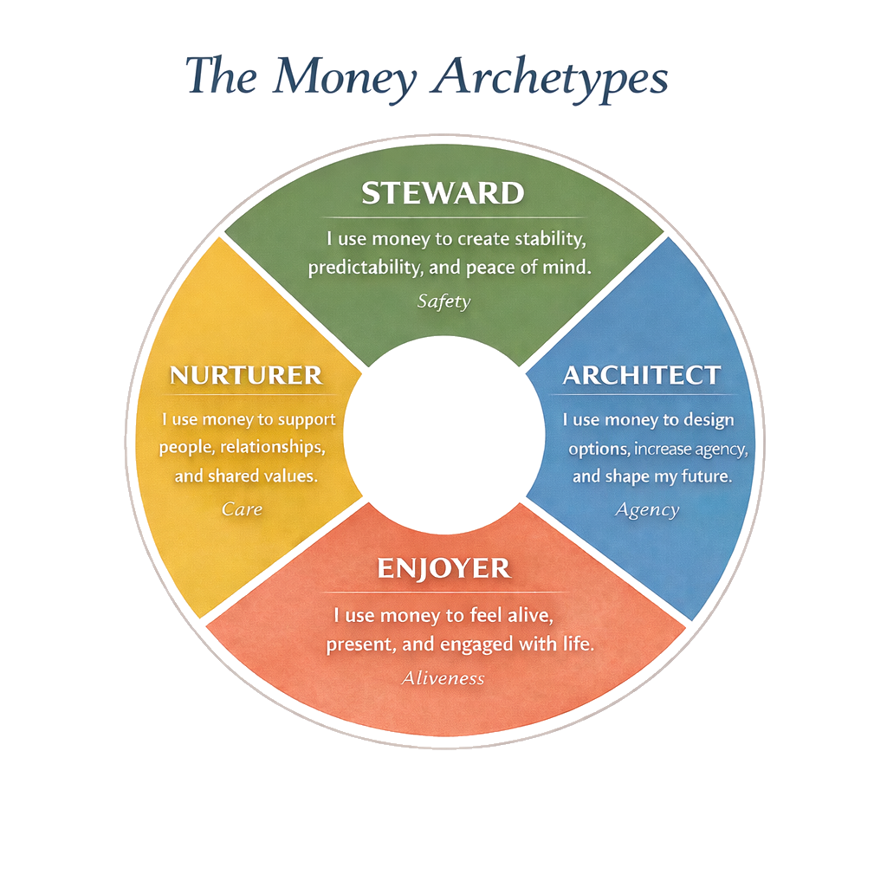

<!DOCTYPE html>
<html lang="en">
<head>
  <meta charset="UTF-8">
  <meta name="viewport" content="width=device-width, initial-scale=1.0">
  <title>Your Money Story — Discover Your Money Archetype</title>
  <meta name="description" content="Discover your Money Archetype with this interactive quiz based on Jillian Johnsrud's Your Money Story. Solo or couples mode.">
  <meta property="og:title" content="Your Money Story — Discover Your Money Archetype">
  <meta property="og:description" content="Take the quiz and discover which of the four money archetypes shapes how you save, spend, and live.">
  <meta property="og:type" content="website">
  <link href="https://fonts.googleapis.com/css2?family=Playfair+Display:ital,wght@0,400;0,500;0,600;0,700;1,400;1,500&family=DM+Sans:ital,wght@0,400;0,500;0,600;0,700;1,400&display=swap" rel="stylesheet">
  <style>
    *, *::before, *::after { box-sizing: border-box; margin: 0; padding: 0; }
    html { scroll-behavior: smooth; -webkit-text-size-adjust: 100%; }
    body { margin: 0; padding: 0; background: #FBF7F1; font-family: 'DM Sans', sans-serif; -webkit-font-smoothing: antialiased; }
    #root { min-height: 100vh; }
  </style>
  <script crossorigin src="https://unpkg.com/react@18/umd/react.production.min.js"></script>
  <script crossorigin src="https://unpkg.com/react-dom@18/umd/react-dom.production.min.js"></script>
  <script src="https://unpkg.com/@babel/standalone/babel.min.js"></script>
</head>
<body>
  <div id="root"></div>
  <script type="text/babel">
const { useState, useEffect, useRef, useCallback } = React;


const BOOK_URL = "https://jillianjohnsrud.com/your-money-story";

/* ═══════════════════════════════════════════
   EXPANDED ARCHETYPE DATA — ~50% more book content
   ═══════════════════════════════════════════ */
const AD = {
  steward: {
    name: "The Steward", core: "Safety", color: "#6B8F71", light: "#EBF2EC", accent: "#8DB393",
    motto: '"Stability creates security."', emoji: "🛡️",
    description: "You instinctively treat money like a foundation — not a scoreboard, not a toy, not a way to prove anything. Money is the thing that keeps the floor from wobbling. When you're at your best, you create a kind of quiet strength that other people can feel just by standing near you: we're okay. We've planned. We're prepared.",
    origin: "Stewards often become Stewards honestly. Sometimes it's because they grew up around instability — financial, emotional, or both — and learned early that calm doesn't magically arrive. You build it. Sometimes it's because they've carried responsibility for other people: kids, a partner, parents, a team. Sometimes it's simply temperament: your nervous system relaxes when there's structure and a buffer.",
    protecting: [
      "Predictability — I can count on my future.",
      "Dignity — I won't have to beg, borrow, or scramble.",
      "Relational safety — My family won't suffer because I was reckless.",
      "Freedom from panic — I don't want money emergencies to run my life.",
    ],
    healthySays: [
      "\"I sleep better when the bills are paid ahead.\"",
      "\"I don't want lifestyle inflation to trap us.\"",
      "\"I want to be able to handle a surprise without drama.\"",
      "\"I'm not against fun — I just don't want fun to become fragile.\"",
    ],
    coreMotivation: "Peace of mind.",
    coreFear: "Instability — especially the kind that feels humiliating or out of control. This doesn't mean you're anxious or pessimistic. It often means you've seen what happens when people don't plan. You've watched someone unravel from a single unexpected bill. You've simply recognized that 'winging it' is not a strategy you want to bet your nervous system on.",
    gift: "You understand, deep in your bones, that financial stability is emotional stability. You build systems that reduce stress: automated savings, predictable spending, a clear emergency fund, insurance, debt payoff plans, and conservative choices that keep life from tipping. Your gift is turning abstract fear into concrete systems that create peace.",
    strength: "Your caution kept you safe. You built stability out of chaos — and that's a real gift. You're almost alchemical: you can take a messy financial life and gently turn it into something steady.",
    shineExamples: "You create budgets that actually match reality, build emergency funds in small consistent steps, pay off debt with patience and persistence, choose affordable housing even when others judge, and think in seasons and buffers rather than best-case scenarios. A Steward couple might choose the 'smaller, older house' so they can have a more spacious life overall: less stress, more margin, fewer fights.",
    shadow: "But here's the thing: your story can become so effective that it starts to feel like the only safe way to live. As life stabilizes, the next chapter asks for something different — more desire, more risk tolerance, more willingness to choose something that isn't fully guaranteed. You've built a solid house — but you won't step outside unless you can predict the weather for the next decade.",
    shadowDetails: "Opportunity shows up, but it's uncertain — a new job, a move, a business idea, a mini-retirement. You can see the upside and also fourteen ways it could go wrong. Life starts asking for aliveness, not just stability. You might feel an ache: 'We're safe… so why do I still feel stuck?' The emergency fund becomes a fortress. Savings keep growing, but permission doesn't.",
    eightyPercent: "Safety stops being a feeling and starts being a cage. The very discipline that gave you peace now steals it. You've optimized so thoroughly that spontaneity feels reckless. Fun requires a spreadsheet. Pleasure needs justification. You hit a moving goalpost — there's always one more month to save, one more scenario to prepare for.",
    eightyVignette: "Picture this: dessert arrives at dinner. You can afford it — a hundred times over. But something in you hesitates. You do the math. The cost per enjoyment unit. Whether it's 'worth it.' Often you choose the safe path. You order water. You feel a flash of satisfaction — you've stayed on script. Except the script is exhausting you.",
    eightySignals: [
      "The goalpost keeps moving. You've \"made it\" by every rational measure, but you still don't feel safe enough to relax.",
      "Spontaneity triggers irritation. An unplanned expense feels like a betrayal.",
      "Fun requires mental accounting. You've started budgeting for joy, which somehow made joy disappear.",
      "You feel secretly envious of people who seem to \"waste\" money freely — and slightly superior. Both at once.",
      "Your biggest fear isn't scarcity anymore — it's being caught with your guard down.",
    ],
    gives: "You create peace. You're the one who makes sure the lights stay on, the plan exists, and everyone can breathe.",
    quote: '"I\'ll relax when I know we\'re safe."',
    naturalStrengths: [
      "Creating predictable systems — you know how to build something reliable. Lean into this as a gift, not a cage.",
      "Building financial resilience — you've figured out how to bounce back. You're antifragile. That's rare and powerful.",
      "Spotting fragility — while everyone else is dancing, you see the structural weakness. That's wisdom, not paranoia.",
      "Keeping life calm — in a chaotic world, you've created pockets of peace.",
    ],
    borrowFrom: {
      enjoyer: {
        title: "Borrow Aliveness from the Enjoyer",
        why: "Your safety is built. Now it needs a reason to exist. The Enjoyer knows something essential: joy is a renewable resource. It doesn't deplete you — it fuels you.",
        practices: [
          "Start a Joy Budget — set aside a small amount monthly that you must spend on pleasure. No rollover. No saving it. Practice choosing delight without calculating.",
          "Order the dessert. Not because it's efficient — because it sounds good. Notice what happens in your body when you let yourself have something without justifying it.",
          "Plan one experience per month that has zero productive value — a long walk, a matinee, a spontaneous drive. Let your nervous system learn that unstructured time isn't wasted time.",
          "Ask yourself weekly: 'What did I enjoy this week that I didn't have to earn?' If the answer is nothing, that's your signal.",
        ],
      },
      architect: {
        title: "Borrow Agency from the Architect",
        why: "You've mastered protection. Now borrow the Architect's skill of bounded risk — the ability to say yes and no simultaneously. The Architect turns safety from paranoid vigilance into a clear framework. Once the frame is set, you're free within it.",
        practices: [
          "Use 'Yes, if' planning: say yes to the dream, then fill in the safety conditions. 'Yes to the trip — if we protect the runway first.' This lets you move without abandoning your values.",
          "Set a Freedom Number — a specific savings threshold where you give yourself explicit permission to take a calculated risk. Write it down. When you hit it, honor it.",
          "Build one Opportunity Fund alongside your emergency fund. Emergency funds protect against bad surprises. Opportunity funds let you say yes to good ones.",
          "Practice making one decision per week faster than usual. The Architect knows that sometimes a 'good enough' decision made quickly beats a perfect decision made too late.",
        ],
      },
      nurturer: {
        title: "Borrow Connection from the Nurturer",
        why: "Your systems keep life stable — but stability without warmth can feel hollow. The Nurturer knows that the point of a solid floor isn't just standing on it. It's dancing on it with people you love.",
        practices: [
          "Spend money this week specifically to increase closeness — host a dinner, buy a friend coffee, or invest in a shared experience. No ROI calculation. The return is relational.",
          "Practice one act of generosity that makes you slightly uncomfortable. Not reckless — just past your usual edge. A bigger tip, a surprise gift, paying for someone's groceries.",
          "Ask someone you trust: 'What's one way I could show up more?' Listen without defending. The Nurturer is comfortable with vulnerability — borrow that.",
          "Create a monthly 'People Budget' — money specifically earmarked for relationship investment. Dinners, gifts, experiences with the humans who matter most.",
        ],
      },
    },
    updatedStory: "Safety isn't just something I preserve — it's something I feel. The shift isn't about saving less. It's about redefining what safety is. Safety isn't the absence of risk. It's the presence of resilience strong enough to absorb risk. It's knowing your parachute is packed well enough that you can actually jump.",
    sixWeekPlan: {
      mantra: "\"This is practice, not personality.\"",
      subtitle: "Practice the Enjoyer: from \"safe and stable\" to \"safe and alive.\"",
      closing: "You are not trying to become an Enjoyer. You are teaching your Steward a new skill: \"I can be safe enough to live.\"",
      weeks: [
        { title: "The Dessert Experiment", theme: "I can have more than the minimum.", exercise: "Order two desserts this week. No bargain-hunting. No 'I should.' Get what looks good. The point is: do you let yourself have what you want?", storyToQuestion: "\"We can go out to eat, but we never order dessert.\" The translation? Pleasure is optional. Pleasure must be justified.", tinyIdea: "Pleasure is data. It teaches you what you actually like." },
        { title: "Upgrade One Thing", theme: "I don't have to earn quality.", exercise: "Upgrade one small, repeatable thing — the twelve-dollar version of something you always buy for six. Better candle, better soap, better socks, better berries. The 'nice' notebook.", storyToQuestion: "\"It's not worth it.\" The translation? Good things are for later. Good things are for other people.", tinyIdea: "You're not buying an object. You're buying a daily experience." },
        { title: "The Joy Budget", theme: "If it's not planned, it doesn't happen.", exercise: "Create a Joy Budget for the week — $25–$100. You must spend it on joy only. Flowers, a museum ticket, a book you want (not 'should'). You don't get to save it for later.", storyToQuestion: "\"We'll do fun stuff when everything is handled.\" The translation? Fun lives at the bottom of the list, where it rarely survives.", tinyIdea: "Planning joy is not unspontaneous. It's protective." },
        { title: "The Unjustified Yes", theme: "I can choose what I want without a spreadsheet.", exercise: "Say yes to something purely because you want it — not because it's efficient, educational, or productive. A movie at the theater. A massage. A meal out with no special occasion. Tell yourself: 'This is not a hole in the boat. This is a window.'", storyToQuestion: "\"I need a reason.\" The translation? Desire isn't a good enough reason.", tinyIdea: "Desire is not the enemy. It's guidance." },
        { title: "Micro-Spontaneity", theme: "I can be safe without being rigid.", exercise: "Do one spontaneous thing this week that costs money. Same-day decision. No overthinking. Grab ice cream. Stop at the bookstore. Say 'yes' to the invite.", storyToQuestion: "\"We don't do things last minute.\" The translation? Spontaneity is danger.", tinyIdea: "Spontaneity is a muscle. You strengthen it gently." },
        { title: "The Alive List", theme: "I want a life that feels like mine.", exercise: "Make an Alive List — ten things that reliably make you feel lit up. What did you love before life got so serious? Then choose one and build a 90-day plan to include it.", storyToQuestion: "\"Being responsible means minimizing wants.\" The translation? My aliveness is negotiable.", tinyIdea: "Stability is the soil. Aliveness is the garden." },
      ],
    },
    conversationOpener: "\"Can we do this in two parts? First: what we want to feel. Second: what we need to make it safe.\"",
    conversationTip: "Lead with safety conditions: 'I'm not afraid of this plan. I'm afraid of this plan without a buffer. What if we…?' Name the hidden emotion — it's often fear, not anger.",
    flavorLeft: { name: "Steward → Nurturer", label: "Safety Through Care", desc: "You plan as an act of love. You prioritize family needs over personal desires, feel responsible for other people's stability, and express love through reliability. You often become the \"emotional CFO\" of the household.", strength: "Deep loyalty and steadiness.", watchFor: "Over-functioning, quiet self-neglect, guilt around spending on yourself." },
    flavorRight: { name: "Steward → Architect", label: "Safety Through Control", desc: "You build safety through systems and mastery. You track everything, optimize relentlessly, and feel uneasy without a plan. Relaxing feels like losing vigilance.", strength: "Brilliant planning and resilience-building.", watchFor: "Rigidity, analysis paralysis, mistaking control for safety." },
  },
  architect: {
    name: "The Architect", core: "Agency", color: "#3D5A80", light: "#E8EEF4", accent: "#5B7EA1",
    motto: '"If I design well, I\'ll stay free."', emoji: "📐",
    description: "You treat money like a design tool. Not a moral issue. Not a measure of worth. Money is leverage. It's optionality. It's the ability to shape your future instead of inheriting it. You can look at a constraint and say, \"Okay. Let's solve for that.\"",
    origin: "Architects often become Architects honestly. Sometimes they've lived inside systems that felt confining — tight budgets, demanding jobs, rigid family expectations, institutions that didn't make room for their humanity. Sometimes they've watched what happens when people have no choices and decided: that will not be me. And sometimes it's simply how their mind works: they see patterns, trade-offs, and pathways. They feel calm when they can map the terrain.",
    protecting: [
      "Agency — I can choose rather than react.",
      "Optionality — I'm not cornered.",
      "Mobility — I can pivot, leave, renegotiate, relocate.",
      "Self-determination — My life isn't a default setting.",
    ],
    healthySays: [
      "\"I want choices, not luxury.\"",
      "\"I don't want my lifestyle to trap me.\"",
      "\"I'm building a runway.\"",
      "\"The goal isn't more money — it's more freedom.\"",
    ],
    coreMotivation: "Freedom through agency.",
    coreFear: "Being trapped — in a job, a relationship dynamic, a financial situation, or an identity that no longer fits. This doesn't mean you're commitment-phobic or unstable. It often means you've learned that good intentions don't protect you from constraint. Choices do. Systems do. Margins do.",
    gift: "You don't just hope for a better future — you engineer one. You create systems and strategies: income diversity, savings buffers, scalable skills, negotiation tactics, flexible housing, contingency plans. You're comfortable asking, 'What's the highest-leverage move here?' and then taking it.",
    strength: "Your strategy created options. Where others saw walls, you built doors. You can take a life that feels boxed in and build escape routes — without drama, without fantasy, and often without burning anything down.",
    shineExamples: "You negotiate for remote work or better pay, build savings runways, diversify income streams, reduce recurring expenses to buy back time, make strategic career moves with re-entry in mind, and treat a mini-retirement like a design problem, not a daydream. An Architect couple might choose to live below their means not out of fear, but because they want a life with more choice.",
    shadow: "But here's the catch: your story can become so effective that life starts to feel like a perpetual optimization project. Once you reach stability and flexibility, the next step asks for presence, savoring, the ability to stop improving life long enough to actually live it. The future becomes a horizon you never arrive at. There's always another tweak, another strategy. Joy gets delayed. Even rest has a purpose. Even fun has an ROI.",
    shadowDetails: "Life turns into a spreadsheet. Even relationships can become 'systems.' You struggle to let go of control — because control has been your path to safety. You can't be present without improving. You can't take a walk without mentally restructuring your day around it.",
    eightyPercent: "It's Saturday morning. Gloriously unscheduled. And almost immediately, your mind starts moving. Errands. Reorganizing. Batch-cooking. You time-block the tasks, create a plan so good that by the time you're done, you're exhausted. A day off that required more energy management than a regular workday. You've turned rest into a project.",
    eightyVignette: "The paradox: you have more options than ever, but freedom is slipping away. Because freedom, it turns out, requires the ability to do nothing. To be suboptimal. To have thoughts and feelings that don't fit into a plan.",
    eightySignals: [
      "You can't be present without improving. Even leisure requires optimization.",
      "Plans multiply. For every task, a sub-plan. For every day, a backup. For the backup, a contingency.",
      "Agency has become exhausting. Having options was supposed to feel freeing — instead, every choice feels loaded.",
      "Your nervous system never really rests. There's always something to calculate, leverage, or improve.",
      "You feel uneasy without optimization. Ambiguity feels dangerous.",
    ],
    gives: "You create options. You're the one who sees the exit ramp, builds the runway, and keeps life flexible.",
    quote: '"If I design well enough, I\'ll stay free."',
    naturalStrengths: [
      "Systems thinking — you see how pieces connect and how to make them work better together.",
      "Strategic flexibility — you adapt faster than almost anyone because you've already mapped the contingencies.",
      "Building freedom — you know how to create a life that doesn't trap you. That's rare and powerful.",
      "Solving constraints creatively — where others see walls, you see design problems.",
    ],
    borrowFrom: {
      nurturer: {
        title: "Borrow Connection from the Nurturer",
        why: "You've mastered optionality. But the Nurturer knows something you're starting to suspect: the point of options isn't control — it's connection. Instead of 'How can I optimize this?' try 'What do we want our life to stand for?'",
        practices: [
          "Have a values conversation with someone important: 'What do we want our life to stand for?' Not goals — values. Write it down in one sentence. Then design around that instead of optimizing everything.",
          "Spend money this week purely to deepen a relationship — dinner with a friend, a gift for your partner, a shared experience with no strategic value. Practice investing in people, not systems.",
          "Ask for help with something you'd normally solve alone. Pay for help you've been resisting. Accept an offer without immediately 'paying it back.' The Nurturer knows that interdependence is strength.",
          "Create one protected block of time for care — a long walk with someone, a phone call you've been postponing, a kid date. No multitasking. No efficiency add-ons. Your attention is part of your wealth.",
        ],
      },
      enjoyer: {
        title: "Borrow Aliveness from the Enjoyer",
        why: "Your life is brilliantly designed — and it might also be spiritually dry. The Enjoyer has figured out that some of life's best moments come from nowhere. They're not scheduled. They're not optimized. They just happen.",
        practices: [
          "Block off 'No ROI Time' — an evening or afternoon with literally no plan, no agenda, no productivity angle. Let your nervous system remember there's a difference between wasting time and spending time.",
          "Do one spontaneous thing this week that costs money. Same-day decision. No overthinking. Grab ice cream. Stop at the bookstore. Say yes to the invite before you can calculate.",
          "Practice being suboptimal on purpose. Take the scenic route. Order what looks good instead of what's the best value. Leave the house without a plan. Build your tolerance for unstructured joy.",
          "Ask yourself: 'When was the last time I did something purely because it felt good — not because it was productive, educational, or strategic?' If you can't remember, that's your signal.",
        ],
      },
      steward: {
        title: "Borrow Steadiness from the Steward",
        why: "You build freedom through strategy — but the Steward can teach you that sometimes the most powerful move is standing still. Not every season needs a pivot. Not every problem needs a redesign.",
        practices: [
          "Pick one financial system that's working and commit to leaving it alone for 90 days. No tweaking, no optimizing, no upgrading. Practice the peace of 'this is enough for now.'",
          "Build a boring, predictable buffer — an emergency fund with no clever strategy attached. Let it just sit there. The Steward knows that sometimes the unsexy cushion is the thing that lets you sleep.",
          "Before redesigning something, ask: 'Is this actually broken, or am I just restless?' The Steward distinguishes between genuine problems and the discomfort of inaction.",
          "Practice one week of financial stillness — no new strategies, no new accounts, no research. Just live within what you've already built. Notice how it feels to stop engineering for a moment.",
        ],
      },
    },
    updatedStory: "Freedom isn't just something I design — it's something I inhabit. The shift isn't about fewer plans. It's about knowing that not every problem is a design problem. Some things get better by being felt, not fixed.",
    sixWeekPlan: {
      mantra: "\"This is practice, not personality.\"",
      subtitle: "Practice the Nurturer: from \"well-designed and self-directed\" to \"well-designed and deeply connected.\"",
      closing: "You are not trying to become a Nurturer. You are teaching your Architect a new skill: \"My agency can serve love.\"",
      weeks: [
        { title: "Budget for Belonging", theme: "Connection is a legitimate use of money.", exercise: "Spend money this week specifically to increase belonging. Invite someone to coffee and you pay, or cook dinner with friends. No 'best value.' Choose what creates warmth.", storyToQuestion: "\"I can't justify spending money on that.\" The translation? If it's not efficient, it's waste.", tinyIdea: "Money can buy convenience. It can also buy closeness." },
        { title: "Ask for Help", theme: "Interdependence is strength.", exercise: "Ask for help with something you'd normally solve alone. Pay for help you've been resisting. Accept an offer without 'paying it back' immediately.", storyToQuestion: "\"I should be able to handle this myself.\" The translation? Needing others makes me unsafe.", tinyIdea: "Your independence is a skill. Receiving is also a skill." },
        { title: "The Meaning Purchase", theme: "Not everything needs ROI.", exercise: "Make one purchase that is primarily about meaning, not optimization. Donate to a cause that moves you, buy from a local maker, support a friend's fundraiser. No spreadsheets.", storyToQuestion: "\"If it doesn't improve my future, it's not worth it.\" The translation? Value equals leverage.", tinyIdea: "Meaning is a kind of wealth." },
        { title: "The Shared Dream Conversation", theme: "Agency is richer when it's shared.", exercise: "Have a 30–60 minute conversation with someone important: 'What would a rich life look like for us? Where are we over-optimized and under-nourished?' Your job is to listen, not solve.", storyToQuestion: "\"I'll figure it out.\" The translation? I trust myself more than I trust collaboration.", tinyIdea: "A plan can be a bridge, not just a blueprint." },
        { title: "Care Through Time", theme: "Presence is a currency.", exercise: "Create one protected block of time for care. A long walk with someone (no agenda), a kid date, a phone call you normally postpone. No multitasking. No 'efficient' add-ons.", storyToQuestion: "\"I don't have time.\" The translation? My calendar is too important to be interrupted by relationship.", tinyIdea: "Your attention is part of your wealth." },
        { title: "The Relational Wealth Plan", theme: "My life is more than my options.", exercise: "Create a 90-day Relational Wealth Plan — one commitment that puts meaning and people into the structure of your life. Weekly call with your sister. Monthly dinner with friends. A shared experience fund.", storyToQuestion: "\"Freedom means not needing anyone.\" The translation? Dependence is danger.", tinyIdea: "The point of freedom is not escape. It's belonging by choice." },
      ],
    },
    conversationOpener: "\"Can we do this in two parts? First: what we want to feel. Second: what we need to make it safe.\"",
    conversationTip: "Translate plans to relational benefits: 'This isn't just about the money. This is about building us the life where we can be present together.' Lead with feeling outcomes, then offer container options.",
    flavorLeft: { name: "Architect → Steward", label: "Agency Through Stability", desc: "You build freedom conservatively. You prioritize buffers and predictability, move slowly but steadily, and prefer low-risk paths to autonomy. You feel safest when the runway is substantial.", strength: "Resilience, staying power, excellent risk management.", watchFor: "Delaying action in the name of 'readiness,' over-weighting downside risk." },
    flavorRight: { name: "Architect → Enjoyer", label: "Agency Through Freedom", desc: "You build freedom through flexibility and experience. You value time autonomy over efficiency, make choices that preserve mobility, and design life around adventure or variety. You accept messiness in exchange for freedom.", strength: "Adaptability, creativity, willingness to pivot.", watchFor: "Fragmentation, under-building the boring systems that make freedom sustainable." },
  },
  enjoyer: {
    name: "The Enjoyer", core: "Aliveness", color: "#C1666B", light: "#F8ECED", accent: "#D4898D",
    motto: '"Life is meant to be felt."', emoji: "✨",
    description: "You relate to money like it's a conduit for vitality. Money isn't primarily about security or strategy — it's about life. Presence. Pleasure. Beauty. Novelty. You don't just spend — you savor. You remind everyone that time is not infinite and that a life can be financially \"successful\" and still feel emotionally flat.",
    origin: "Enjoyers often become Enjoyers honestly. Sometimes it's a response to a childhood where life felt tight — financially, emotionally, or culturally. Sometimes it's a rebound from years of responsibility, perfectionism, or productivity-as-identity. And sometimes it's temperament: you feel regulated by delight, not discipline. Your nervous system says, I can breathe again when there's something beautiful to look forward to.",
    protecting: [
      "Aliveness — I want to feel awake in my life.",
      "Presence — I don't want my life to pass by unnoticed.",
      "Meaning through experience — I want memories, not just milestones.",
      "Freedom from numbness — I don't want to trade my humanity for safety.",
    ],
    healthySays: [
      "\"I don't want to wait until retirement to live.\"",
      "\"I'd rather have a smaller life that feels rich.\"",
      "\"Experiences matter more than stuff.\"",
      "\"We can always make more money. We can't make more time.\"",
    ],
    coreMotivation: "Vitality and presence.",
    coreFear: "A life that feels dull, constrained, or unlived — especially the regret of waking up and realizing you postponed joy for so long that you forgot how to access it. This doesn't mean you're irresponsible or shallow. It often means you understand something true: people can build perfectly stable lives and still feel dead inside them. You're not reckless — you're protecting the pulse.",
    gift: "You are often the first to notice when life has become a machine — efficient, responsible, productive — and spiritually dry. You add color back in. You remember birthdays. You plan the trip. You bring the fancy snacks. You're the one who says, 'Let's stop and look at the sunset,' and means it.",
    strength: "Your spontaneity brought life back when things got numb. You reminded everyone — including yourself — that money is for something, and that something should feel good. You help people come back to themselves.",
    shineExamples: "You start taking weekends again, return to hobbies, put travel and beauty and play back on the calendar, invest in experiences that create memory and meaning. You start making small, life-giving choices: buying flowers, saying yes to spontaneous outings, investing in a creative class. You're not being frivolous — you're rebuilding your relationship with being alive.",
    shadow: "But here's the catch: your story can become so corrective — so necessary after deprivation — that it turns into an overcorrection. Pleasure becomes the primary regulator. If you feel stressed, you spend. If you feel bored, you book something. Long-term needs get underfunded. Consequences arrive slowly — it's the cumulative effect of living without guardrails. And if someone suggests a budget, it can feel like they're suggesting a personality change.",
    shadowDetails: "A few small indulgences aren't the problem. It's the cumulative drift. The identity gets threatened. You may feel alive now but quietly anxious later. The Enjoyer, who fundamentally knows how to feel alive, starts feeling ashamed instead.",
    eightyPercent: "You book the weekend away. The moment you hit 'confirm,' there's a rush. The weekend arrives and it's everything you wanted — you're present, you laugh, you feel alive. Then Monday morning, there's a pit in your stomach. A small voice asking what the credit card bill looks like. The joy has a shadow now. Not because the joy wasn't real — but because it isn't supported.",
    eightyVignette: "You've become so good at knowing what feels worth it that you've stopped checking whether it's actually sustainable. Pleasure is real and good — but when pleasure stops being supported, it cracks. It becomes a guilty secret instead of a celebration.",
    eightySignals: [
      "Spontaneity is stressful, not fun. You want to go, but worry creeps in.",
      "Guilt follows joy. 'I deserve this' gets immediately followed by anxiety about whether you actually do.",
      "You're living richly now and worrying intensely later — especially at 2am.",
      "Your pleasures come with an aftertaste — not because they weren't good, but because they aren't stable.",
      "You're starting to resent your own joy, which is its own kind of tragedy.",
    ],
    gives: "You create aliveness. You're the one who reminds us that money is for something — and that something should feel good.",
    quote: '"Life is meant to be felt, not just managed."',
    naturalStrengths: [
      "Knowing what feels worth it — you feel the difference between an experience that matters and one that's just expensive. Most people don't have that.",
      "Creating memories and rituals — you understand that experiences matter, and you know how to make moments linger.",
      "Keeping the 'why' alive — while everyone else is grinding, you remember that the point is to be alive.",
      "Fueling follow-through through pleasure — you know that joy is renewable energy, not waste.",
    ],
    borrowFrom: {
      steward: {
        title: "Borrow Stability from the Steward",
        why: "You don't need less pleasure. You need pleasure with a foundation. The Steward knows that you can be safe and alive at the same time. Structure doesn't kill joy — it protects it.",
        practices: [
          "Try a two-bucket system: one for Stability (bills, essentials) and one for Joy (everything else). Money goes to Stability first, then Joy. Now when you book a weekend, you're not wondering if you 'should' — you're checking the Joy Bucket. The shame disappears.",
          "Start a micro emergency fund with a friendly name — 'Soft Landing Fund,' 'Future Me Exhale.' Transfer $10–$50 and set it to auto-transfer weekly. Preparedness is a love letter to your future self.",
          "Practice the 24-hour pause on one non-essential purchase this week. Put it in the cart. Set a reminder. Revisit: do you still want it? The point isn't to say no — it's to make your yes more intentional.",
          "Get one bill ahead — prepay a utility or add an extra payment. Feel the relief of 'ahead.' Future ease is its own kind of pleasure.",
        ],
      },
      architect: {
        title: "Borrow Strategy from the Architect",
        why: "The Architect knows how to have both — pleasure and sustainability. Instead of choosing between joy and safety, they design around both. The dream doesn't disappear. It gets designed.",
        practices: [
          "Create an Adventure Fund with a specific goal — that trip, that class, that experience. Auto-transfer a small amount weekly. Now your spontaneity has a runway, and the guilt disappears.",
          "Try 'dream first, design second': name what you want, then figure out how to make it work. Maybe the trip is shorter. Maybe dinner out is once a month instead of weekly. The point is: the dream lives inside a system.",
          "Add a stop-loss to your spending: spend freely up to a clear boundary, then pause. This isn't restriction — it's freedom with a floor. You can enjoy without the 2am anxiety.",
          "Build a 90-day Joy System with three simple buckets: Bills, Future Support (savings), and Joy (guilt-free spending). Set one automation. You're not limiting joy — you're giving it infrastructure.",
        ],
      },
      nurturer: {
        title: "Borrow Purpose from the Nurturer",
        why: "Your aliveness is powerful — and it becomes even richer when it's shared. The Nurturer knows that the deepest experiences aren't solo. They're the ones where you make someone else feel alive too.",
        practices: [
          "Plan one experience this month that's specifically about making someone else's day — a surprise dinner for a friend, flowers for your partner, taking your parent somewhere they've always wanted to go. Joy shared is joy doubled.",
          "Before a big purchase, ask: 'Who else benefits from this?' Not to justify it — but to notice whether your spending patterns have become solitary. The Nurturer weaves others into the fabric.",
          "Start a tradition that costs very little but creates belonging — weekly game night, monthly potluck, seasonal outings with friends. The Nurturer knows that the richest experiences are often the cheapest ones.",
          "Practice generosity as a form of aliveness. Buy someone's coffee. Leave a bigger tip. Contribute to a friend's fundraiser. Notice how giving can feel just as electric as receiving.",
        ],
      },
    },
    updatedStory: "Aliveness lasts longer when it's supported. The shift isn't about less joy — it's about joy that doesn't have an expiration date. The real sophistication isn't in the moment of pleasure — you've got that. It's in the architecture underneath that lets you keep enjoying without crashing.",
    sixWeekPlan: {
      mantra: "\"This is practice, not punishment.\"",
      subtitle: "Practice the Steward: from \"alive and expressive\" to \"alive and sustainably supported.\"",
      closing: "You are not trying to become a Steward. You are teaching your Enjoyer a new skill: \"Aliveness lasts longer when it's supported.\"",
      weeks: [
        { title: "Joy Without Regret", theme: "Support makes pleasure sweeter.", exercise: "Choose one thing you love spending on. Enjoy it — and attach a tiny support move. Buy the latte and transfer $5 to savings. Order takeout and set up a $10/week 'future fun' auto-transfer.", storyToQuestion: "\"Life is short. I'll figure it out later.\" The translation? Planning feels like losing aliveness.", tinyIdea: "A little structure is not a cage. It's a container." },
        { title: "The Two Buckets", theme: "Simple beats perfect.", exercise: "Create just two buckets: Needs (bills, essentials) and Choice (everything else). No categories. No tracking apps. Just clarity.", storyToQuestion: "\"Budgets are restrictive.\" The translation? Structure equals deprivation.", tinyIdea: "You don't need control. You need clarity." },
        { title: "One Bill Ahead", theme: "Stability is a form of self-love.", exercise: "Pick one recurring bill and get one cycle ahead. Prepay a utility, add $25–$100 extra. Feel the relief of 'ahead.'", storyToQuestion: "\"I'm fine until I'm not.\" The translation? I handle things reactively.", tinyIdea: "Future ease is a kind of pleasure." },
        { title: "Emergency Fund, But Friendly", theme: "Safety doesn't have to be scary.", exercise: "Start a micro emergency fund with a supportive name — 'Soft Landing Fund,' 'Future Me Exhale,' 'Peace of Mind.' Transfer $10–$50 and set to auto-transfer weekly.", storyToQuestion: "\"Emergency funds feel depressing.\" The translation? Thinking about risk kills the vibe.", tinyIdea: "Preparedness is a love letter to your future self." },
        { title: "The 24-Hour Pause", theme: "I can want something without buying it immediately.", exercise: "Pick one non-essential purchase. Put it in your cart. Set a reminder for 24 hours. Revisit: Do I still want it? What feeling was I trying to create?", storyToQuestion: "\"If I don't do it now, I'll miss it.\" The translation? Urgency equals aliveness.", tinyIdea: "Desire doesn't require immediate action." },
        { title: "The Joy System", theme: "My joy deserves infrastructure.", exercise: "Build a 90-day Joy System with three buckets: Bills/Needs, Future Support (savings), Joy (guilt-free spending). Set one simple automation.", storyToQuestion: "\"Structure will make me boring.\" The translation? Stability equals dullness.", tinyIdea: "You're not limiting joy. You're protecting it." },
      ],
    },
    conversationOpener: "\"Can we do this in two parts? First: what we want to feel. Second: what we need to make it safe.\"",
    conversationTip: "Validate the joy first: 'I hear you. You're not boring. You're building something that lets us breathe.' Name the feeling you're chasing — then design the container together.",
    flavorLeft: { name: "Enjoyer → Architect", label: "Joy With Foresight", desc: "You learn to plan pleasure. You build travel funds, create systems that protect joy, and treat enjoyment as something sustainable, not impulsive.", strength: "Joy that lasts, aliveness with structure.", watchFor: "Turning joy into a project, over-curating experiences." },
    flavorRight: { name: "Enjoyer → Nurturer", label: "Joy as a Gift", desc: "You express love through delight. You create experiences for others, give gifts generously, plan celebrations, and use money to make people feel cared for and included.", strength: "Warmth, connection, relational richness.", watchFor: "Over-giving through 'treats,' spending to maintain harmony, using joy to smooth discomfort." },
  },
  nurturer: {
    name: "The Nurturer", core: "Care", color: "#C9A227", light: "#FBF4E0", accent: "#D4B94C",
    motto: '"Care creates belonging."', emoji: "🌿",
    description: "You relate to money as a tool for love. Money is how you take care of people, create comfort, build community, and express values. It's not just what you spend — it's what your spending means. When you're at your best, you make life feel warmer. You humanize money.",
    origin: "Nurturers often become Nurturers honestly. Sometimes they grew up in environments where love was shown through sacrifice or responsibility. Sometimes they were the emotional \"grown-up\" early — tending, smoothing, supporting. Sometimes they learned that connection is fragile, and care is the glue. And sometimes it's temperament: you're attuned to people. You feel safest when relationships feel safe.",
    protecting: [
      "Belonging — I matter because I contribute.",
      "Connection — I keep relationships healthy through care.",
      "Meaning — Money should serve something good.",
      "Harmony — I don't want conflict or disconnection.",
    ],
    healthySays: [
      "\"I just want everyone to be okay.\"",
      "\"Money should help people.\"",
      "\"I'd rather spend on experiences together than stuff.\"",
      "\"It feels good to be generous.\"",
    ],
    coreMotivation: "Connection through contribution.",
    coreFear: "Being selfish, irrelevant, or disconnected — especially the fear that if you stop giving, you won't be as valued or loved. This doesn't mean you're manipulative or needy. It often means you learned that care was how you survived. That being useful kept you safe. That love sometimes had to be earned through effort.",
    gift: "You instinctively understand that money isn't only numbers — it's food on the table, stress reduced, comfort offered, joy shared. You remember that a life can be financially optimized and still feel relationally poor. You make sure the people around you feel held.",
    strength: "Your generosity built real belonging. In a world that can feel transactional, you made people feel seen, held, and valued. You create homes that feel safe, friendships that feel nourishing, families that feel more functional.",
    shineExamples: "You remember what matters to people, create rituals and traditions, prioritize time together, help others through hard seasons, and give in a way that makes others feel seen. You quietly pay for a friend's meal when money is tight — not to be a hero, but because 'of course I would.' A Nurturer parent might choose family experiences — camping trips, library dates, special breakfasts — because togetherness is their definition of wealth.",
    shadow: "But here's the catch: your story can become so identity-forming that it turns into over-responsibility. Once you reach rich relationships and generosity, the next step asks for something different — boundaries, receiving, self-prioritization without guilt. You may sense you're tired. You may even sense resentment. But the moment you imagine pulling back, an old fear flares: Who will I be if I'm not the helper?",
    shadowDetails: "Over-giving becomes invisible. You don't register how often you say yes. Money becomes a way to manage discomfort — spending to make things easier for others, to avoid conflict, to smooth guilt. Under-earning or under-asking: you hesitate to charge your worth, negotiate, or advocate because it feels selfish. Resentment grows quietly. You give and give — then feel alone when you need support.",
    eightyPercent: "Your friend mentions they need help. Almost before you think about it, you're offering. Reaching for your wallet. Taking on the thing. There's a split second — a tiny flare of irritation. A whisper: 'Wait, what about you?' But you push it down fast, because that thought feels selfish. So you give. You help. And then, weeks later, there's a specific flavor of resentment. Not angry. Quiet. A sadness underneath. A small hollowing out.",
    eightyVignette: "Giving is no longer a choice — it's a reflex. Your generosity has become a way to disappear. You under-ask. You over-accommodate. Your own boundaries have become invisible to you. The care that once felt nourishing now feels like it's quietly consuming you.",
    eightySignals: [
      "Giving is reflexive, not chosen. You say yes before you even know if you have it to give.",
      "Boundaries feel like guilt. The thought of saying no makes you feel cruel.",
      "You under-ask and over-accommodate. Your needs are vague even to you. Other people's are sharp and clear.",
      "You feel secretly invisible. People love you, but they're not asking what you need.",
      "Resentment lingers — the quiet kind. A sadness underneath. A small hollowing out.",
    ],
    gives: "You create belonging. You're the one who makes sure no one gets left behind.",
    quote: '"If I take care of everyone, everything will be okay."',
    naturalStrengths: [
      "Creating security and warmth for people — you know how to make someone feel safe and deeply seen.",
      "Building trust through generosity — trust is earned through showing up, and you show up.",
      "Making spending meaningful — you don't just give money, you give care. You know what it's for.",
      "Investing in connection — you understand that the most valuable currency is belonging.",
    ],
    borrowFrom: {
      architect: {
        title: "Borrow Boundaries from the Architect",
        why: "You don't need to care less. You need care that includes you in the equation. The Architect has figured out how to say yes and no with clarity — and the clearest yes is the one that comes with a boundary.",
        practices: [
          "Create a giving budget cap — decide how much you can genuinely give each month without compromising your own stability. Write it down. Within it, be as generous as you want. Beyond it, you pause. This turns giving from a guilt-driven reflex into a clean choice.",
          "Practice saying 'That doesn't work for me' once this week — to a financial request, a volunteer ask, or a favor that costs you time or money. No long explanation. One sentence. The Architect knows that clarity is kindness.",
          "Make one clear request this week: 'Can we split this?' or 'I need help with this.' Be direct. No hints. The Architect asks cleanly and without guilt — borrow that muscle.",
          "Design a 90-day plan that includes you as a line item. What do you need? What would support look like? Put it in writing — because the Architect knows that if it's not in the plan, it won't happen.",
        ],
      },
      steward: {
        title: "Borrow Protection from the Steward",
        why: "If you wait to protect yourself, you won't — because generosity always gets there first. The Steward automates protection so it happens before the giving instinct kicks in.",
        practices: [
          "Set up an automatic transfer to your own savings before you see the money — before generosity can redirect it. Call it 'Future Me' or 'The Fund That Reminds Me I Matter.' Make your own needs a line item.",
          "Pay yourself first this month — even just $5–$50 per week. The amount matters less than the identity shift: 'I pay myself first because I matter.' Stop waiting for your needs to become emergencies.",
          "Build one financial buffer that's just for you — not the family emergency fund, not the giving budget. Yours. The Steward knows that your stability is what makes your generosity sustainable.",
          "Track where your money goes for two weeks without changing anything. Just notice. The Steward pays attention to the data — and you may discover that you've been quietly funding everyone else's comfort while neglecting your own.",
        ],
      },
      enjoyer: {
        title: "Borrow Self-Permission from the Enjoyer",
        why: "You know how to make other people feel alive. The Enjoyer can teach you to turn that gift inward — because you deserve the same warmth you give everyone else.",
        practices: [
          "Do one small treat only for you this week — a pastry, a book, a long bath — without immediately balancing it by giving to someone else. No 'but I also...' Just you. Self-inclusion is not selfishness.",
          "Spend money on something that makes you feel alive, not useful. Not the practical shoes — the beautiful ones. Not the family restaurant — your favorite spot. Practice wanting things for yourself without needing a justification.",
          "Plan something you've been postponing because 'other people need me more' — a class, a trip, a creative project. The Enjoyer knows that your aliveness isn't a luxury. It's the fuel for everything you give.",
          "Ask yourself: 'When was the last time I did something purely for my own joy?' If the answer involves other people's happiness, that's your signal. The Enjoyer would say: your turn.",
        ],
      },
    },
    updatedStory: "Care that includes me lasts longer. The shift isn't about less generosity — it's about generosity that comes from abundance instead of depletion. The deepest care isn't the one that costs you everything. It's the one where you're still standing afterwards. Where you gave and it felt good.",
    sixWeekPlan: {
      mantra: "\"This is practice, not selfishness.\"",
      subtitle: "Practice the Architect: from \"loving and generous\" to \"loving and sustainably resourced.\"",
      closing: "You are not trying to become an Architect. You are teaching your Nurturer a new skill: \"Care that includes me lasts longer.\"",
      weeks: [
        { title: "Two Desserts for Me", theme: "I get to receive, too.", exercise: "Do one small treat only for you — without balancing it by immediately giving to someone else. A pastry, a book, a cozy coffee date with yourself. No justification, no 'but I also…'", storyToQuestion: "\"I can treat others, but not myself.\" The translation? Receiving is selfish; giving is love.", tinyIdea: "Self-inclusion is not selfishness. It's sustainability." },
        { title: "The Boundary Budget", theme: "Generosity needs a container.", exercise: "Create a simple Giving Budget for the month — even $20–$200. When it's spent, it's done. You're not reducing generosity. You're giving it a safe container.", storyToQuestion: "\"If someone needs something, I should help.\" The translation? Saying no makes me a bad person.", tinyIdea: "A boundary is what lets your yes stay true." },
        { title: "Ask for What You Want", theme: "My needs can be spoken.", exercise: "Make one clear request — money-related or resource-related. 'Can we split this?' 'I need help with this.' 'I'd like us to set a fun budget.' Be direct. No hints. One sentence is enough.", storyToQuestion: "\"It's easier if I just handle it.\" The translation? Asking creates conflict.", tinyIdea: "Clarity is kindness — especially to you." },
        { title: "No With Love", theme: "Saying no protects what matters.", exercise: "Say no to one request this week that costs you money, time, or energy. Use: 'That doesn't work for me' or 'I've committed my resources elsewhere.' Do not offer a long explanation.", storyToQuestion: "\"If I say no, I'll hurt them.\" The translation? Boundaries cause disconnection.", tinyIdea: "A clean no protects your future yes." },
        { title: "Pay Myself First", theme: "I am building my own runway.", exercise: "Set up an automatic transfer to something that supports you. Start with $5–$50/week. The amount is less important than the identity shift: I pay myself first because I matter.", storyToQuestion: "\"Everyone else comes first.\" The translation? My future is less important.", tinyIdea: "Your future is a person you're responsible for." },
        { title: "The Care Plan That Includes Me", theme: "I can love without disappearing.", exercise: "Create a 90-day Sustainable Care Plan — one structure that protects your resources. The pattern you're changing. The boundary you're adopting. How you'll support yourself when guilt shows up.", storyToQuestion: "\"Love means sacrifice.\" The translation? If I'm not giving, I'm not loving.", tinyIdea: "Care with structure becomes a life you can actually keep." },
      ],
    },
    conversationOpener: "\"Can we do this in two parts? First: what we want to feel. Second: what we need to make it safe.\"",
    conversationTip: "Use 'care + cost' language: 'This is important to me, and I want us to stay stable. Let's find the caring limit.' Name the hidden emotion — it might be guilt or invisibility. Say it out loud.",
    flavorLeft: { name: "Nurturer → Enjoyer", label: "Care Through Shared Joy", desc: "You express love through delight. You give gifts, plan experiences, make ordinary life feel special, and spend on celebration that brings people together.", strength: "Warmth, joy, relational richness.", watchFor: "Spending to maintain harmony, over-giving through 'treats,' avoiding hard conversations with generosity." },
    flavorRight: { name: "Nurturer → Steward", label: "Care Through Responsibility", desc: "You express love through stability. You're the reliable one — you take on logistics and planning, ensure others are safe, and handle the practical load quietly.", strength: "Steadiness, loyalty, protective care.", watchFor: "Over-functioning, feeling responsible for everyone's comfort, confusing obligation with love." },
  },
};

/* ═══════════════════════════════════════════
   PAIRINGS (unchanged — abbreviated for space)
   ═══════════════════════════════════════════ */
const pKey=(a,b)=>[a,b].sort().join("+");
const PAIRINGS={
[pKey("steward","architect")]:{title:"Foundation & Design",emoji:"🏗️",vibe:"You're playing 4D chess with money — and you're really good at it.",best:["Strong planning together — you actually talk about big moves first","Clear shared outcomes — when you align, you really align","Great at life transitions — you design them instead of falling into them"],snag:"The Steward hears options and feels risk. The Architect hears caution and feels trapped.",stewardFeels:"\"Why are we exploring options when we should be eliminating risk?\"",architectFeels:"\"Why do we keep planning and never actually move?\"",tips:["Runway Rule: big plans get a prep window. Architect designs it; Steward confirms safety.","'Yes if' planning: both say yes to the dream, then fill in the safety conditions","Separate funds: one for Stability, one for Opportunity"],script:"Steward: \"I'm not against this. My body just needs to know we're safe. What buffer would make this feel steady?\" · Architect: \"Here are two ways to do it with guardrails. Which feels best?\""},
[pKey("steward","nurturer")]:{title:"Care & Consistency",emoji:"🏡",vibe:"Deep trust and values alignment. Your home feels both solid and warm.",best:["Family logistics — you see the household money and make it work","Values-driven spending — you agree on what matters","High trust — you're not fighting about hidden behavior","Generosity with stability — you give because you're solid"],snag:"The Steward worries: \"Are we giving away money we need?\" The Nurturer feels monitored: \"Why am I being policed for caring?\"",stewardFeels:"\"I'm not trying to control — I'm trying to protect us.\"",nurturerFeels:"\"I'm not being reckless — I'm being loving.\"",tips:["Shared Giving Budget: Nurturer gets a clear line item for care","Self-Inclusion Rule: Nurturer must put themselves in the equation","Rotate who says no — keeps one person from being the bad guy","Quarterly check: \"Are we generous and stable?\""],script:"Steward: \"I love it too. I just want to make sure it doesn't cost us something we need.\" · Nurturer: \"You're right. Let's choose a number and stay there.\""},
[pKey("steward","enjoyer")]:{title:"Roots & Blossoms",emoji:"🌸",vibe:"The Steward is the roots — grounded, holding the foundation. The Enjoyer is the blossoms — alive, making sure the life is worth living.",best:["Dreams into plans — Enjoyer dreams it, Steward builds the runway","Lightness without drift — you have both play and stability","You actually enjoy your money — not just defend it"],snag:"\"You never want to do anything\" meets \"You never think things through.\" The Steward might control spending to feel safe. The Enjoyer might hide spending to feel free.",stewardFeels:"\"I want you to feel alive. I just also need to feel safe.\"",enjoyerFeels:"\"I'm not being reckless — I'm being alive.\"",tips:["Joy Budget: guilt-free money, no questions, no aftermath","24-hour pause rule: if you still want it tomorrow, it's real","One adventure per month + one micro-joy per week"],script:"Enjoyer: \"I want this because it makes me feel alive.\" · Steward: \"I want you to feel alive too. Can we choose a number that lets us say yes without stress?\""},
[pKey("architect","nurturer")]:{title:"Vision & Heart",emoji:"💡",vibe:"You're not just building something efficient — you're building something with soul.",best:["Long-term planning with a values compass","Freedom with purpose — you design autonomy that serves love","Goals that actually feel like goals because they matter"],snag:"The Architect can optimize away the tenderness. The Nurturer can feel guilty for wanting autonomy.",architectFeels:"\"Let's solve this efficiently — that IS how I show love.\"",nurturerFeels:"\"But what about us? The people inside the plan?\"",tips:["Relational infrastructure: design connection into the system","Solo freedom time, explicitly blessed","Feelings first meeting, systems second"],script:"Architect: \"Here are three options that keep our goals intact.\" · Nurturer: \"Before we optimize — can we name what we want this to feel like?\""},
[pKey("architect","enjoyer")]:{title:"Engine & Spark",emoji:"⚡",vibe:"Both running at high RPM. When aligned, unstoppable. When misaligned, chaos.",best:["Big dreams + execution — you don't just wish, you build","High energy — you actually do things other couples talk about","You feel alive in how you move through life together"],snag:"Joy becomes a project. Planning becomes a buzzkill.",architectFeels:"\"I'm trying to make the fun sustainable.\"",enjoyerFeels:"\"Can we just do something without a spreadsheet?\"",tips:["Two-phase decisions: dream phase first, then design","Adventure Fund + stop-loss rule","Surprise date rotation: one designs, the other surrenders"],script:"Enjoyer: \"Let's just book it.\" · Architect: \"I'm open. Give me one hour to price it and set guardrails so it stays fun.\""},
[pKey("nurturer","enjoyer")]:{title:"Warmth & Delight",emoji:"🎉",vibe:"The couple everyone wants to be around. Generous, celebratory, warm.",best:["Connection — everything is relational","Generosity — you give without resentment (usually)","Traditions — you mark time with meaning","You actually enjoy your life together"],snag:"You both overspend to maintain harmony. You're not fighting; you're slowly sinking.",nurturerFeels:"\"I can't say no — what if they think I don't care?\"",enjoyerFeels:"\"Let's worry about the numbers later.\"",tips:["Shared Joy + Giving Budget with clear lines","Cheap joy list — what actually makes you happy (rarely expensive)","Practice one 'no' together weekly"],script:"Nurturer: \"I want it to feel sweet after we buy it too. What's the kindest limit?\" · Enjoyer: \"This would make our life sweeter.\""},
[pKey("steward","steward")]:{title:"The Fortress",emoji:"🏰",vibe:"Maximum security, maximum alignment — but who gives either of you permission to live?",best:["Incredible financial stability","Deep mutual understanding","Low conflict — you agree on fundamentals","Resilience in crisis"],snag:"Both waiting for the other to say 'it's safe enough to enjoy now' — neither ever does.",stewardFeels:"\"We should be proud... so why doesn't it feel like enough?\"",tips:["Schedule mandatory joy: one unbudgeted experience per month","Set a 'freedom number' — once you hit it, practice enjoying","Ask: \"What did we say no to that we wish we'd said yes to?\""]},
[pKey("architect","architect")]:{title:"The Blueprint",emoji:"📊",vibe:"Two strategic minds, extraordinary precision — but whose plan wins?",best:["Rapid decision-making — you both speak optimization","Ambitious life design","Mutual respect for independence","Creative financial strategy"],snag:"Two Architects debate whose strategy is better. Both designing the future, nobody's home in the present.",architectFeels:"\"My plan is better — but so is theirs.\"",tips:["Designate domains — swap quarterly","Practice inefficiency together: one evening with no agenda","Ask: \"Are we designing a life or a system?\""]},
[pKey("enjoyer","enjoyer")]:{title:"The Bonfire",emoji:"🔥",vibe:"Maximum aliveness — but who's watching the fuel?",best:["Incredible shared experiences","You live the life others put on vision boards","Low resentment — nobody holds the other back"],snag:"Both assume the other is watching the numbers. Anxiety catches up at 2am, both pretending to be asleep.",enjoyerFeels:"\"We're really living. But... are we going to be okay?\"",tips:["Automate transfers before you see the money","Assign 'Guardian of the Floor' quarterly","One money date per month: 20 minutes, then go do something fun"]},
[pKey("nurturer","nurturer")]:{title:"The Hearth",emoji:"🕯️",vibe:"Overflowing with love — but who's taking care of the caretakers?",best:["Deep relational wealth","Aligned values — care is the point","Low ego conflict","Your children grow up feeling profoundly loved"],snag:"Both give until nothing left. The martyr spiral: 'I'll sacrifice more' until both depleted.",nurturerFeels:"\"When do I get to be okay?\"",tips:["Self-care budget: mandatory, non-negotiable","Practice receiving from each other","Agree that 'no' is a form of care for the relationship"]},
};

/* ═══════════════════════════════════════════
   QUESTIONS (unchanged)
   ═══════════════════════════════════════════ */
const QUESTIONS=[
{id:1,scenario:"You receive an unexpected $5,000. Before you've even thought it through, your gut reaction is...",options:[{text:"Transfer it to savings immediately — you'll figure out what it's \"for\" once it's safe",weights:{steward:1,architect:.2,enjoyer:0,nurturer:0}},{text:"Open a spreadsheet and model three scenarios for where it creates the highest long-term leverage",weights:{architect:1,steward:.3,enjoyer:0,nurturer:0}},{text:"Feel a rush — that cooking class in Italy or that road trip you've been daydreaming about just became real",weights:{enjoyer:1,nurturer:.15,steward:0,architect:0}},{text:"Immediately think of your sister who's been struggling, or the friend whose car just died",weights:{nurturer:1,enjoyer:.2,steward:0,architect:0}}]},
{id:2,scenario:"It's 2am. You can't sleep. The money thought circling your mind is...",options:[{text:"Running the numbers on whether your emergency fund could actually survive a real emergency",weights:{steward:1,architect:.15,enjoyer:0,nurturer:0}},{text:"Questioning whether your whole financial strategy has a blind spot you haven't accounted for",weights:{architect:.9,steward:.35,enjoyer:0,nurturer:0}},{text:"Wondering if you're spending the best years of your life just accumulating instead of doing something with it",weights:{enjoyer:.9,architect:.2,steward:0,nurturer:.1}},{text:"Replaying a conversation where someone you love mentioned money stress — and you didn't offer help",weights:{nurturer:1,steward:0,enjoyer:0,architect:0}}]},
{id:3,scenario:"A friend texts: \"Flights to Portugal are $300 round trip this weekend. I just booked — you in?\"",options:[{text:"Your chest tightens. A trip that wasn't budgeted feels reckless, no matter how cheap the flight is.",weights:{steward:1,nurturer:0,enjoyer:0,architect:.1}},{text:"Intrigued, but you need to see how it fits the bigger picture before committing",weights:{architect:.85,steward:.3,enjoyer:.1,nurturer:0}},{text:"You're already packing. This is literally what money is for.",weights:{enjoyer:1,nurturer:.15,steward:0,architect:0}},{text:"Excited — mostly because your friend has had a rough year and this could be what they need",weights:{nurturer:.85,enjoyer:.4,steward:0,architect:0}}]},
{id:4,scenario:"You and your partner disagree about a big purchase. What's really happening underneath?",options:[{text:"You feel the ground shifting. This purchase disrupts the cushion you need to feel okay.",weights:{steward:1,nurturer:.1,enjoyer:0,architect:0}},{text:"You're frustrated they haven't thought it through — there's clearly a smarter way",weights:{architect:.9,steward:.2,enjoyer:0,nurturer:0}},{text:"You're exhausted by every money decision turning into a negotiation instead of living",weights:{enjoyer:.9,architect:0,steward:0,nurturer:.2}},{text:"You'd say yes just to keep the peace — their happiness matters more than the amount",weights:{nurturer:.9,steward:0,enjoyer:.15,architect:0}}]},
{id:5,scenario:"You get a significant raise. The very first place your mind goes is...",options:[{text:"\"Now I can finally max out retirement and bump up the emergency fund to a full year\"",weights:{steward:.9,architect:.3,enjoyer:0,nurturer:0}},{text:"\"This changes the independence timeline — let me recalculate\"",weights:{architect:1,steward:.2,enjoyer:0,nurturer:0}},{text:"\"I've earned this. I'm upgrading something that actually makes me feel alive\"",weights:{enjoyer:.85,architect:.1,steward:0,nurturer:.1}},{text:"\"I can finally set up that education fund for my niece\" or \"Mom won't worry about that bill\"",weights:{nurturer:1,steward:.1,enjoyer:0,architect:0}}]},
{id:6,scenario:"When you hear \"enough\" applied to money, the honest reaction in your body is...",options:[{text:"Skepticism. There's always another risk. \"Enough\" is a moving target.",weights:{steward:.9,architect:.25,enjoyer:0,nurturer:0}},{text:"A math problem. You could calculate it — but the number keeps shifting.",weights:{architect:.85,steward:.35,enjoyer:0,nurturer:0}},{text:"Irrelevant. It's about whether you're using what you have to feel something real.",weights:{enjoyer:1,nurturer:.1,steward:0,architect:0}},{text:"Complicated. You might have enough — but there are people counting on you.",weights:{nurturer:1,steward:.15,enjoyer:0,architect:0}}]},
{id:7,scenario:"A close friend asks to borrow $2,000. They'll pay you back \"when they can.\"",options:[{text:"Every alarm fires. Lending creates risk you can't control.",weights:{steward:1,architect:.1,enjoyer:0,nurturer:0}},{text:"You'd consider it — with a clear timeline, written terms, and a backup plan",weights:{architect:.8,steward:.3,enjoyer:0,nurturer:.15}},{text:"If it feels right, you hand it over without agonizing",weights:{enjoyer:.5,nurturer:.6,steward:0,architect:0}},{text:"You say yes before checking your account — saying no feels like abandonment",weights:{nurturer:1,enjoyer:0,steward:0,architect:0}}]},
{id:8,scenario:"Your financial advisor says: \"You could afford to loosen up.\" Your gut says...",options:[{text:"\"Ahead of schedule\" and \"safe\" aren't the same thing.",weights:{steward:1,architect:.15,enjoyer:0,nurturer:0}},{text:"\"Define 'loosen up.' Show me the scenario where it doesn't cost future optionality.\"",weights:{architect:1,steward:.2,enjoyer:0,nurturer:0}},{text:"\"Finally — someone giving me permission to actually live.\"",weights:{enjoyer:1,nurturer:0,steward:0,architect:.1}},{text:"\"Great — I could help my parents or start that giving fund.\"",weights:{nurturer:.9,enjoyer:.2,steward:0,architect:.1}}]},
{id:9,scenario:"Your proudest financial moment was probably when you...",options:[{text:"Weathered something hard and your preparation meant your family barely felt it",weights:{steward:1,nurturer:.2,enjoyer:0,architect:.15}},{text:"Made a move nobody else saw — a deal, a path that shouldn't have worked but did",weights:{architect:1,enjoyer:.15,steward:0,nurturer:0}},{text:"Said yes to something expensive and terrifying — and it became the best memory of your life",weights:{enjoyer:1,nurturer:.1,steward:0,architect:0}},{text:"Made it possible for someone else to do something they couldn't have done alone",weights:{nurturer:1,enjoyer:.15,steward:0,architect:0}}]},
{id:10,scenario:"The one money lesson you'd pass to your children...",options:[{text:"\"Build a floor first. Everything gets easier once you know you won't fall.\"",weights:{steward:.9,architect:.2,enjoyer:0,nurturer:.15}},{text:"\"Design your life on purpose. Don't sleepwalk into financial defaults.\"",weights:{architect:.9,enjoyer:.15,steward:.1,nurturer:0}},{text:"\"Spend on what makes you come alive. You get one shot.\"",weights:{enjoyer:.9,nurturer:.1,steward:0,architect:.1}},{text:"\"Show up for others. Money comes and goes — relationships last.\"",weights:{nurturer:.9,steward:0,enjoyer:.15,architect:0}}]},
{id:11,scenario:"\"Money can't buy happiness.\" Your private reaction...",options:[{text:"\"No — but it buys security. I cannot be happy without knowing I'm protected.\"",weights:{steward:1,architect:.1,enjoyer:0,nurturer:0}},{text:"\"Money buys freedom. Freedom is the prerequisite for everything else.\"",weights:{architect:1,enjoyer:.2,steward:.1,nurturer:0}},{text:"\"Spoken like someone who's never let themselves enjoy what they have.\"",weights:{enjoyer:.9,architect:.1,steward:0,nurturer:0}},{text:"\"Maybe not for you — but it can buy happiness for someone going without.\"",weights:{nurturer:.9,enjoyer:.1,steward:0,architect:.1}}]},
{id:12,scenario:"The sentence you've whispered more times than you'd admit...",options:[{text:"\"I'll finally relax when I know — truly know — that we're going to be okay.\"",weights:{steward:1,nurturer:.15,enjoyer:0,architect:0}},{text:"\"If I can just get the right system in place, I'll stop worrying and start living.\"",weights:{architect:.85,steward:.2,enjoyer:.2,nurturer:0}},{text:"\"There has to be more to life than spreadsheets and delayed gratification.\"",weights:{enjoyer:1,nurturer:.1,steward:0,architect:0}},{text:"\"If I just give a little more — stretch a little further — everyone will be okay.\"",weights:{nurturer:1,steward:.1,enjoyer:0,architect:0}}]},
];

/* ═══════════════════════════════════════════
   UTILITIES
   ═══════════════════════════════════════════ */
const WO=["steward","architect","enjoyer","nurturer"];const emptyS=()=>({steward:0,architect:0,enjoyer:0,nurturer:0});const topT=s=>Object.entries(s).sort((a,b)=>b[1]-a[1])[0][0];const secT=s=>{const r=Object.entries(s).sort((a,b)=>b[1]-a[1]);return r[1]&&r[1][1]>0?r[1][0]:null;};function shuffle(a,seed){const r=[...a];let s=seed;for(let i=r.length-1;i>0;i--){s=(s*9301+49297)%233280;const j=Math.floor(s/233280*(i+1));[r[i],r[j]]=[r[j],r[i]];}return r;}
const sans="'DM Sans',sans-serif";const serif="'Playfair Display',Georgia,serif";const bg="#FBF7F1";
const fonts=<link href="https://fonts.googleapis.com/css2?family=Playfair+Display:ital,wght@0,400;0,500;0,600;0,700;1,400;1,500&family=DM+Sans:ital,wght@0,400;0,500;0,600;0,700;1,400&display=swap" rel="stylesheet"/>;

/* ═══════════════════════════════════════════
   UI COMPONENTS (compact)
   ═══════════════════════════════════════════ */
function Btn({children,onClick,primary,style:s,...p}){const[h,setH]=useState(false);return<button onClick={onClick} onMouseEnter={()=>setH(true)} onMouseLeave={()=>setH(false)} style={{fontFamily:sans,fontSize:15,fontWeight:600,padding:"16px 48px",border:primary?"none":"1.5px solid #DDD6CC",borderRadius:50,cursor:"pointer",letterSpacing:".05em",transition:"all .3s",background:primary?(h?"#3D3428":"#2C2419"):(h?"#2C2419":"transparent"),color:primary?"#FBF7F1":(h?"#FBF7F1":"#2C2419"),boxShadow:primary?"0 4px 20px rgba(44,36,25,.15)":"none",...s}} {...p}>{children}</button>;}

function Wheel({scores,primary}){const t=Object.values(scores).reduce((a,b)=>a+b,0)||1;return<div style={{display:"flex",justifyContent:"center",gap:6,flexWrap:"wrap",margin:"24px 0"}}>{WO.map(k=>{const d=AD[k],pct=Math.round(scores[k]/t*100),isP=k===primary;return<div key={k} style={{display:"flex",flexDirection:"column",alignItems:"center",gap:8,padding:"14px 12px",borderRadius:16,flex:"1 1 65px",minWidth:65,maxWidth:100,background:isP?d.light:"transparent",border:isP?`2px solid ${d.color}`:"2px solid transparent"}}><div style={{fontSize:22}}>{d.emoji}</div><div style={{width:46,height:46,borderRadius:"50%",display:"flex",alignItems:"center",justifyContent:"center",background:`conic-gradient(${d.color} ${pct*3.6}deg,#E8E2DA ${pct*3.6}deg)`}}><div style={{width:34,height:34,borderRadius:"50%",background:isP?d.light:bg,display:"flex",alignItems:"center",justifyContent:"center",fontFamily:sans,fontSize:12,fontWeight:700,color:d.color}}>{pct}%</div></div><div style={{fontFamily:sans,fontSize:10,fontWeight:isP?700:500,color:isP?d.color:"#9B8E7E"}}>{d.core}</div></div>;})}</div>;}

function Blend({scores,pk,sk}){const t=Object.values(scores).reduce((a,b)=>a+b,0)||1;const pp=Math.round(scores[pk]/t*100),sp=sk?Math.round(scores[sk]/t*100):0,gap=pp-sp;const p=AD[pk],s=sk?AD[sk]:null;let txt;if(gap<=8&&s)txt=`You're a near-equal blend of ${p.name} and ${s.name}. Your money story lives in the creative tension between ${p.core.toLowerCase()} and ${s.core.toLowerCase()} — that's not a contradiction, it's power. You have access to two currencies.`;else if(gap<=18&&s)txt=`You lead with ${p.name}'s drive for ${p.core.toLowerCase()}, but there's a strong undercurrent of ${s.name}. Your ${s.core.toLowerCase()} instinct colors your decisions more than you realize — in the exceptions, the gut calls, the moments when pure ${p.core.toLowerCase()} isn't enough.`;else txt=`Your money story is powerfully centered in ${p.core.toLowerCase()}. This clarity is a gift — you know what you need from money. The growth edge isn't abandoning this clarity but expanding it.`;return<div style={{background:"linear-gradient(135deg,#F5F0E8,#FFFDF9)",borderRadius:16,padding:"22px",margin:"20px 0",borderLeft:`3px solid ${p.accent}`}}><div style={{fontFamily:sans,fontSize:11,letterSpacing:".12em",textTransform:"uppercase",color:"#9B8E7E",marginBottom:8}}>Your Blend</div><p style={{fontFamily:sans,fontSize:15,lineHeight:1.7,color:"#3D3428",margin:0}}>{txt}</p></div>;}

function Acc({title,icon,color,children,open:dflt}){const[o,setO]=useState(!!dflt);return<div style={{border:"1.5px solid #E8E2DA",borderRadius:14,overflow:"hidden",marginBottom:8,background:o?"#FFFDF9":"transparent"}}><button onClick={()=>setO(!o)} style={{width:"100%",display:"flex",alignItems:"center",gap:12,padding:"16px 18px",border:"none",background:"none",cursor:"pointer",fontFamily:sans}}><span style={{fontSize:17,opacity:.7,width:22,textAlign:"center",color}}>{icon}</span><span style={{fontSize:14,fontWeight:600,color:"#2C2419",flex:1,textAlign:"left"}}>{title}</span><span style={{fontSize:17,color:"#B5A898",transition:"transform .3s",transform:o?"rotate(180deg)":"none"}}>▾</span></button><div style={{maxHeight:o?5000:0,overflow:"hidden",transition:"max-height .5s cubic-bezier(.25,.46,.45,.94)"}}><div style={{padding:"0 18px 18px 52px"}}>{children}</div></div></div>;}

function P({children,style:s}){return<p style={{fontFamily:sans,fontSize:14,lineHeight:1.7,color:"#6B5D4F",margin:"0 0 10px",...s}}>{children}</p>;}
function Ul({items}){return<div style={{margin:"8px 0 12px"}}>{items.map((it,i)=><div key={i} style={{display:"flex",gap:10,marginBottom:6}}><span style={{color:"#9B8E7E",fontSize:12,marginTop:3,flexShrink:0}}>•</span><span style={{fontFamily:sans,fontSize:13,lineHeight:1.6,color:"#5A4E42"}}>{it}</span></div>)}</div>;}
function QBox({text,color}){return<div style={{fontFamily:serif,fontSize:14,fontStyle:"italic",color:color||"#6B5D4F",padding:"12px 16px",background:"rgba(0,0,0,.03)",borderRadius:10,margin:"8px 0",lineHeight:1.6}}>{text}</div>;}
function Tip({children,color}){return<div style={{background:`${color}08`,borderRadius:12,padding:"16px",margin:"10px 0",borderLeft:`3px solid ${color}`}}><div style={{fontFamily:sans,fontSize:11,fontWeight:600,color,marginBottom:6,letterSpacing:".05em",textTransform:"uppercase"}}>Try This</div>{children}</div>;}

function BookCTA({compact}){
  const[hov,setHov]=useState(false);
  if(compact)return<a href={BOOK_URL} target="_blank" rel="noopener noreferrer" style={{display:"flex",alignItems:"center",gap:12,padding:"14px 20px",background:"linear-gradient(135deg,#2C2419,#3D3428)",borderRadius:16,textDecoration:"none",color:"#FBF7F1",cursor:"pointer",boxShadow:"0 4px 20px rgba(44,36,25,.12)"}}><div style={{fontSize:28}}>📖</div><div style={{flex:1}}><div style={{fontFamily:serif,fontSize:15,fontWeight:600,marginBottom:2}}>Your Money Story</div><div style={{fontFamily:sans,fontSize:11,color:"#B5A898"}}>by Jillian Johnsrud · Free</div></div><div style={{fontFamily:sans,fontSize:12,fontWeight:600,padding:"6px 14px",background:"rgba(255,255,255,.12)",borderRadius:20,whiteSpace:"nowrap"}}>Get It Free →</div></a>;
  return<div style={{margin:"40px 0",borderRadius:20,overflow:"hidden",border:"1px solid #E8E2DA",boxShadow:"0 8px 32px rgba(44,36,25,.08)"}}>
    <div style={{background:"linear-gradient(145deg,#2C2419,#3D3428)",padding:"32px 28px 24px",color:"#FBF7F1",textAlign:"center"}}>
      <div style={{fontSize:44,marginBottom:12}}>📖</div>
      <div style={{fontFamily:serif,fontSize:"clamp(22px,4vw,28px)",fontWeight:700,marginBottom:6,lineHeight:1.2}}>Your Money Story</div>
      <div style={{fontFamily:sans,fontSize:14,color:"#B5A898",marginBottom:4}}>by Jillian Johnsrud</div>
      <div style={{display:"inline-block",fontFamily:sans,fontSize:12,fontWeight:700,color:"#FBF7F1",background:"rgba(255,255,255,.15)",borderRadius:20,padding:"4px 14px",marginTop:8,letterSpacing:".05em",textTransform:"uppercase"}}>Free</div>
    </div>
    <div style={{background:"#FFFDF9",padding:"24px 28px 28px"}}>
      <p style={{fontFamily:sans,fontSize:15,color:"#5A4E42",lineHeight:1.7,marginBottom:20,textAlign:"center"}}>Go deeper into all four archetypes, couples dynamics, the 6-week growth plans, and the full framework for updating your money story.</p>
      <a href={BOOK_URL} target="_blank" rel="noopener noreferrer"
        onMouseEnter={()=>setHov(true)} onMouseLeave={()=>setHov(false)}
        style={{display:"block",textAlign:"center",fontFamily:sans,fontSize:15,fontWeight:600,padding:"16px 32px",background:hov?"#3D3428":"#2C2419",color:"#FBF7F1",borderRadius:50,textDecoration:"none",transition:"all .3s",boxShadow:"0 4px 16px rgba(44,36,25,.15)",letterSpacing:".03em"}}>
        Get It Free →
      </a>
    </div>
  </div>;
}

function ShareCard({scores,name}){const pk=topT(scores),sk=secT(scores),p=AD[pk],s=sk?AD[sk]:null;const t=Object.values(scores).reduce((a,b)=>a+b,0)||1;const[copied,setCopied]=useState(false);const shareText=`I'm ${p.name} ${p.emoji} — my money story is about ${p.core.toLowerCase()}${s?`, with ${s.name} as your supporting story`:""}.
${p.motto}\nDiscover yours: ${BOOK_URL}`;const handleShare=async()=>{if(navigator.share){try{await navigator.share({title:`I'm ${p.name}!`,text:shareText});}catch(e){}}else{try{await navigator.clipboard.writeText(shareText);setCopied(true);setTimeout(()=>setCopied(false),2000);}catch(e){}}};
return<div style={{margin:"32px 0"}}><div style={{background:`linear-gradient(145deg,${p.light},#FFFDF9 50%,${s?s.light:p.light})`,borderRadius:20,padding:"28px 24px",border:`1.5px solid ${p.color}22`,position:"relative",overflow:"hidden"}}><div style={{position:"absolute",top:-40,right:-40,width:120,height:120,borderRadius:"50%",background:`${p.color}08`}}/><div style={{position:"relative"}}><div style={{fontFamily:sans,fontSize:10,letterSpacing:".15em",textTransform:"uppercase",color:"#9B8E7E",marginBottom:12}}>{name?`${name}'s`:"My"} Money Story</div><div style={{display:"flex",alignItems:"center",gap:14,marginBottom:14}}><div style={{fontSize:40}}>{p.emoji}</div><div><div style={{fontFamily:serif,fontSize:26,fontWeight:700,color:p.color,lineHeight:1.1}}>{p.name}</div>{s&&<div style={{fontFamily:sans,fontSize:12,color:"#9B8E7E",marginTop:4}}>supporting story: <span style={{color:s.color,fontWeight:600}}>{s.name}</span></div>}</div></div><div style={{fontFamily:serif,fontSize:15,fontStyle:"italic",color:"#6B5D4F",marginBottom:14}}>{p.motto}</div><div style={{display:"flex",gap:6}}>{WO.map(k=>{const d=AD[k],pct=Math.round(scores[k]/t*100);return<div key={k} style={{flex:1,textAlign:"center"}}><div style={{height:4,borderRadius:2,background:"#E8E2DA",overflow:"hidden",marginBottom:4}}><div style={{height:"100%",width:`${pct}%`,background:d.color,borderRadius:2}}/></div><div style={{fontFamily:sans,fontSize:9,color:"#9B8E7E"}}>{d.core} {pct}%</div></div>;})}</div><div style={{fontFamily:sans,fontSize:9,color:"#C5BDB3",marginTop:14,textAlign:"center"}}>yourmoneystory.com · Jillian Johnsrud</div></div></div><div style={{textAlign:"center",marginTop:14}}><button onClick={handleShare} style={{fontFamily:sans,fontSize:13,fontWeight:600,padding:"12px 32px",background:"transparent",color:"#2C2419",border:"1.5px solid #DDD6CC",borderRadius:50,cursor:"pointer"}}>{copied?"✓ Copied":navigator.share?"Share Result":"Copy & Share"}</button></div></div>;}

/* ═══════════════════════════════════════════
   DEEP PROFILE — THE BIG EXPANSION
   ═══════════════════════════════════════════ */
function DeepProfile({pk,sk,scores}){
  const p=AD[pk],s=sk?AD[sk]:null;
  const t=Object.values(scores).reduce((a,b)=>a+b,0)||1;
  const sp=sk?Math.round(scores[sk]/t*100):0;
  let flavor=null;
  if(sk&&sp>15){if(p.flavorLeft?.desc?.toLowerCase().includes(AD[sk]?.core.toLowerCase()))flavor=p.flavorLeft;if(p.flavorRight?.desc?.toLowerCase().includes(AD[sk]?.core.toLowerCase()))flavor=p.flavorRight;}
  const plan=p.sixWeekPlan;

  return<div>
    <div style={{background:p.light,borderRadius:20,padding:"24px",borderLeft:`4px solid ${p.color}`,margin:"24px 0"}}><P style={{fontSize:15,color:"#3D3428",margin:0}}>{p.description}</P></div>
    <div style={{textAlign:"center",margin:"28px 0 24px"}}><p style={{fontFamily:serif,fontSize:"clamp(18px,3.5vw,24px)",fontStyle:"italic",color:p.color,lineHeight:1.5,margin:0}}>{p.quote}</p><div style={{width:40,height:2,background:p.color,margin:"14px auto 0",opacity:.3}}/></div>

    <div style={{margin:"8px 0"}}>
      <Acc title="Your Origin Story" icon="◉" color={p.color}><P>{p.origin}</P></Acc>

      <Acc title="What You're Really Protecting" icon="♦" color={p.color}>
        <Ul items={p.protecting}/>
        <div style={{fontFamily:sans,fontSize:12,fontWeight:600,color:"#9B8E7E",marginTop:8,marginBottom:6}}>A healthy {p.name.split(" ")[1]} often says:</div>
        {p.healthySays.map((q,i)=><QBox key={i} text={q} color={p.accent}/>)}
      </Acc>

      <Acc title="Motivation & Fear" icon="◈" color={p.color}>
        <div style={{fontFamily:sans,fontSize:12,fontWeight:600,color:p.accent,marginBottom:4}}>Core motivation:</div>
        <P style={{fontWeight:500,color:"#3D3428"}}>{p.coreMotivation}</P>
        <div style={{fontFamily:sans,fontSize:12,fontWeight:600,color:p.accent,marginTop:10,marginBottom:4}}>Core fear:</div>
        <P>{p.coreFear}</P>
      </Acc>

      <Acc title="Your Gift" icon="✦" color={p.color} open><P>{p.gift}</P></Acc>

      <Acc title="When Your Story Shines (A → B)" icon="☀" color={p.color}>
        <P>{p.strength}</P><P style={{color:"#5A4E42"}}>{p.shineExamples}</P>
      </Acc>

      <Acc title="The 80% Threshold — Where Growth Begins" icon="⚡" color={p.color}>
        <P>{p.shadow}</P>
        <QBox text={p.eightyPercent} color={p.color}/>
        <P style={{marginTop:10}}>{p.eightyVignette}</P>
        <div style={{fontFamily:sans,fontSize:12,fontWeight:600,color:"#9B8E7E",marginTop:12,marginBottom:6}}>Signs you've hit it:</div>
        <Ul items={p.eightySignals}/>
      </Acc>

      <Acc title="Your Natural Strengths" icon="◆" color={p.color}>
        <Ul items={p.naturalStrengths}/>
      </Acc>

      {/* BORROW FROM EACH TYPE */}
      <div style={{margin:"16px 0 8px"}}><div style={{fontFamily:sans,fontSize:11,letterSpacing:".15em",textTransform:"uppercase",color:"#9B8E7E",marginBottom:4,paddingLeft:2}}>Your 20% — What to Borrow</div><div style={{fontFamily:sans,fontSize:13,color:"#6B5D4F",lineHeight:1.6,marginBottom:12,paddingLeft:2}}>Your archetype is your 80% — your foundation. These are strengths to experiment with from the other three types, depending on what you need most right now.</div></div>
      {p.borrowFrom && WO.filter(k=>k!==pk).map(k=>{const bf=p.borrowFrom[k];if(!bf)return null;const other=AD[k];return<Acc key={k} title={bf.title} icon={other.emoji} color={other.color}>
        <P style={{color:"#3D3428",fontWeight:500}}>{bf.why}</P>
        <div style={{fontFamily:sans,fontSize:12,fontWeight:600,color:other.color,marginTop:12,marginBottom:8,letterSpacing:".05em",textTransform:"uppercase"}}>Practices to Try</div>
        {bf.practices.map((pr,i)=><div key={i} style={{display:"flex",gap:12,marginBottom:12,padding:"12px 14px",background:i%2===0?"#F5F0E8":"#FFFDF9",borderRadius:10}}>
          <span style={{fontFamily:sans,fontSize:12,fontWeight:700,color:other.color,minWidth:20,marginTop:2}}>{i+1}.</span>
          <span style={{fontFamily:sans,fontSize:13,lineHeight:1.7,color:"#3D3428"}}>{pr}</span>
        </div>)}
      </Acc>;})}


      {flavor&&<Acc title={`Your Flavor: ${flavor.label}`} icon="◐" color={p.color}>
        <P>{flavor.desc}</P>
        <div style={{fontFamily:sans,fontSize:12,color:"#5A4E42",marginTop:4}}><strong>Strength:</strong> {flavor.strength}</div>
        <div style={{fontFamily:sans,fontSize:12,color:"#9B8E7E",marginTop:4}}><strong>Watch for:</strong> {flavor.watchFor}</div>
      </Acc>}

      {/* 6-WEEK GROWTH PLAN — the big new section */}
      <Acc title="Your 6-Week Growth Plan" icon="📋" color={p.color}>
        <div style={{fontFamily:serif,fontSize:15,fontStyle:"italic",color:p.color,marginBottom:6}}>{plan.subtitle}</div>
        <P style={{fontSize:13,color:"#9B8E7E"}}>Mantra: {plan.mantra}</P>
        {plan.weeks.map((w,i)=><div key={i} style={{background:i%2===0?"#F5F0E8":"#FFFDF9",borderRadius:12,padding:"16px",marginBottom:10}}>
          <div style={{display:"flex",alignItems:"center",gap:8,marginBottom:8}}>
            <span style={{fontFamily:sans,fontSize:11,fontWeight:700,color:p.color,background:p.light,borderRadius:20,padding:"3px 10px"}}>Week {i+1}</span>
            <span style={{fontFamily:sans,fontSize:13,fontWeight:600,color:"#2C2419"}}>{w.title}</span>
          </div>
          <div style={{fontFamily:serif,fontSize:13,fontStyle:"italic",color:p.accent,marginBottom:6}}>"{w.theme}"</div>
          <div style={{fontFamily:sans,fontSize:12,color:"#9B8E7E",marginBottom:6}}>Story to question: {w.storyToQuestion}</div>
          <P style={{fontSize:13,color:"#3D3428"}}>{w.exercise}</P>
          <div style={{fontFamily:sans,fontSize:12,fontStyle:"italic",color:"#9B8E7E"}}>💡 {w.tinyIdea}</div>
        </div>)}
        <QBox text={plan.closing} color={p.color}/>
        <div style={{marginTop:12}}><BookCTA compact/></div>
      </Acc>
    </div>
  </div>;
}

/* ═══════════════════════════════════════════
   SCREENS
   ═══════════════════════════════════════════ */
function Welcome({onStart,onCouple}){
  const[v,setV]=useState(false);
  useEffect(()=>{setTimeout(()=>setV(true),100);},[]);
  return<div style={{display:"flex",flexDirection:"column",alignItems:"center",justifyContent:"center",minHeight:"100vh",padding:"40px 24px",textAlign:"center",opacity:v?1:0,transform:v?"none":"translateY(20px)",transition:"all .8s cubic-bezier(.25,.46,.45,.94)"}}>

    <div style={{marginBottom:16,fontSize:14,letterSpacing:".2em",textTransform:"uppercase",color:"#9B8E7E",fontFamily:sans}}>Find Your</div>
    <h1 style={{fontFamily:serif,fontSize:"clamp(36px,7vw,56px)",fontWeight:700,color:"#2C2419",lineHeight:1.1,margin:"0 0 12px"}}>Money Story</h1>
    <div style={{width:60,height:2,background:"linear-gradient(90deg,#6B8F71,#3D5A80,#C1666B,#C9A227)",borderRadius:1,margin:"20px auto"}}/>
    <p style={{fontFamily:serif,fontSize:"clamp(16px,3vw,20px)",color:"#6B5D4F",lineHeight:1.6,maxWidth:520,margin:"0 auto 12px",fontStyle:"italic"}}>The Four Archetypes That Shape<br/>How You Save, Spend, and Live</p>
    <p style={{fontFamily:sans,fontSize:14,color:"#9B8E7E",marginBottom:24}}>Based on the book by Jillian Johnsrud</p>

    

    <p style={{fontFamily:sans,fontSize:15,color:"#6B5D4F",lineHeight:1.7,maxWidth:480,margin:"0 auto 44px"}}>Your money story will help you build an incredible life. Until you've fully optimized it. Then it's time to expand the story so it can take you where you want to go next. Get started!</p>

    <div style={{display:"flex",flexDirection:"column",gap:12,width:"100%",maxWidth:320}}>
      <Btn primary onClick={onStart}>Begin Solo</Btn>
      <Btn onClick={onCouple} style={{fontSize:14}}>Take It Together</Btn>
    </div>
    <p style={{fontFamily:sans,fontSize:12,color:"#B5A898",marginTop:24}}>12 questions · About 4 minutes</p>

  </div>;
}

function QScreen({question,qi,total,onAnswer,selectedIdx,label}){const[v,setV]=useState(false);const[h,setH]=useState(null);const shRef=useRef(null);if(!shRef.current||shRef.current._qid!==question.id){shRef.current=shuffle(question.options,question.id*7+3);shRef.current._qid=question.id;}const opts=shRef.current;useEffect(()=>{setV(false);setTimeout(()=>setV(true),50);},[question.id]);const prog=(qi/total)*100;return<div style={{display:"flex",flexDirection:"column",minHeight:"100vh",padding:"0 24px"}}><div style={{padding:"24px 0 0",maxWidth:600,width:"100%",margin:"0 auto"}}>{label&&<div style={{fontFamily:sans,fontSize:11,fontWeight:600,color:"#C1666B",letterSpacing:".1em",textTransform:"uppercase",marginBottom:8}}>{label}</div>}<div style={{display:"flex",justifyContent:"space-between",alignItems:"center",marginBottom:8}}><span style={{fontFamily:sans,fontSize:12,color:"#B5A898",letterSpacing:".1em",textTransform:"uppercase"}}>Question {qi+1} of {total}</span><span style={{fontFamily:sans,fontSize:12,color:"#B5A898"}}>{Math.round(prog)}%</span></div><div style={{height:3,background:"#E8E2DA",borderRadius:2,overflow:"hidden"}}><div style={{height:"100%",width:`${prog}%`,borderRadius:2,background:"linear-gradient(90deg,#3D5A80,#6B8F71)",transition:"width .6s"}}/></div></div><div style={{flex:1,display:"flex",flexDirection:"column",justifyContent:"center",maxWidth:600,width:"100%",margin:"0 auto",padding:"40px 0",opacity:v?1:0,transform:v?"none":"translateY(16px)",transition:"all .5s"}}><p style={{fontFamily:serif,fontSize:"clamp(20px,4vw,26px)",color:"#2C2419",lineHeight:1.5,marginBottom:36,fontWeight:500}}>{question.scenario}</p><div style={{display:"flex",flexDirection:"column",gap:12}}>{opts.map((o,i)=>{const sel=selectedIdx===i;return<button key={i} onClick={()=>onAnswer(o.weights,i)} onMouseEnter={()=>setH(i)} onMouseLeave={()=>setH(null)} style={{fontFamily:sans,fontSize:15,lineHeight:1.6,padding:"18px 24px",textAlign:"left",cursor:"pointer",border:sel?"2px solid #2C2419":"1.5px solid #DDD6CC",borderRadius:12,transition:"all .25s",background:sel?"#2C2419":h===i?"#F5F0E8":"#FFFDF9",color:sel?"#FBF7F1":"#3D3428",transform:sel?"scale(.985)":h===i?"translateX(4px)":"none"}}>{o.text}</button>;})}</div></div></div>;}

function SoloResult({scores,onRestart,onCouple}){const[v,setV]=useState(false);const[viewingKey,setViewingKey]=useState(null);useEffect(()=>{setTimeout(()=>setV(true),200);},[]);const pk=topT(scores),sk=secT(scores),p=AD[pk],s=sk?AD[sk]:null;

if(viewingKey){const vp=AD[viewingKey];return<div style={{minHeight:"100vh",padding:"48px 24px 80px"}}><div style={{maxWidth:600,margin:"0 auto"}}>
  <button onClick={()=>{setViewingKey(null);window.scrollTo(0,0);}} style={{fontFamily:sans,fontSize:14,color:"#9B8E7E",background:"none",border:"none",cursor:"pointer",padding:"8px 0",marginBottom:16,display:"flex",alignItems:"center",gap:6}}>← Back to your results</button>
  <div style={{textAlign:"center",marginBottom:8}}><div style={{fontSize:48,marginBottom:8}}>{vp.emoji}</div><h1 style={{fontFamily:serif,fontSize:"clamp(32px,6vw,44px)",fontWeight:700,color:vp.color,margin:"0 0 8px",lineHeight:1.1}}>{vp.name}</h1><div style={{fontFamily:serif,fontSize:18,fontStyle:"italic",color:"#6B5D4F"}}>{vp.motto}</div></div>
  <DeepProfile pk={viewingKey} sk={null} scores={scores}/>
  <div style={{textAlign:"center",margin:"32px 0"}}><button onClick={()=>{setViewingKey(null);window.scrollTo(0,0);}} style={{fontFamily:sans,fontSize:14,fontWeight:600,color:"#9B8E7E",background:"none",border:"1.5px solid #DDD6CC",borderRadius:50,padding:"12px 28px",cursor:"pointer"}}>← Back to your results</button></div>
</div></div>;}

return<div style={{minHeight:"100vh",padding:"48px 24px 80px",opacity:v?1:0,transition:"opacity .8s"}}><div style={{maxWidth:600,margin:"0 auto"}}>
  <div style={{textAlign:"center",marginBottom:8}}><div style={{fontFamily:sans,fontSize:12,letterSpacing:".2em",textTransform:"uppercase",color:"#9B8E7E",marginBottom:16}}>Your Money Story Is</div><div style={{fontSize:48,marginBottom:8}}>{p.emoji}</div><h1 style={{fontFamily:serif,fontSize:"clamp(32px,6vw,44px)",fontWeight:700,color:p.color,margin:"0 0 8px",lineHeight:1.1}}>{p.name}</h1><div style={{fontFamily:serif,fontSize:18,fontStyle:"italic",color:"#6B5D4F"}}>{p.motto}</div>{s&&<div style={{fontFamily:sans,fontSize:13,color:"#9B8E7E",marginTop:12}}>supporting story: <span style={{color:s.color,fontWeight:600}}>{s.name}</span></div>}</div>
  <Wheel scores={scores} primary={pk}/><Blend scores={scores} pk={pk} sk={sk}/>
  <DeepProfile pk={pk} sk={sk} scores={scores}/>

  {/* EXPLORE OTHER STORIES */}
  <div style={{margin:"36px 0"}}>
    <div style={{fontFamily:sans,fontSize:11,letterSpacing:".15em",textTransform:"uppercase",color:"#9B8E7E",marginBottom:14,textAlign:"center"}}>Explore the Other Stories</div>
    <div style={{display:"grid",gridTemplateColumns:"1fr 1fr",gap:10}}>
      {WO.filter(k=>k!==pk).map(k=>{const d=AD[k];return<button key={k} onClick={()=>{setViewingKey(k);window.scrollTo(0,0);}} style={{fontFamily:sans,background:d.light,border:`1.5px solid ${d.color}22`,borderRadius:14,padding:"18px 14px",cursor:"pointer",textAlign:"center",transition:"all .2s"}}><div style={{fontSize:28,marginBottom:6}}>{d.emoji}</div><div style={{fontFamily:serif,fontSize:16,fontWeight:700,color:d.color,marginBottom:4}}>{d.name}</div><div style={{fontSize:12,color:"#9B8E7E",lineHeight:1.4}}>{d.core}</div></button>;})}
    </div>
  </div>

  <ShareCard scores={scores}/>
  <BookCTA/>
  <div style={{textAlign:"center",margin:"40px 0 32px"}}>
    <p style={{fontFamily:serif,fontSize:17,fontStyle:"italic",color:"#6B5D4F",lineHeight:1.6,marginBottom:28}}>"Growth isn't becoming a different type. It's integration —<br/>learning to borrow strengths so your life can expand<br/>without betraying who you are."</p>
    <p style={{fontFamily:sans,fontSize:13,color:"#9B8E7E",marginBottom:28}}>— Jillian Johnsrud, <em>Your Money Story</em></p>
    <div style={{display:"flex",gap:12,justifyContent:"center",flexWrap:"wrap"}}>
      <Btn onClick={onRestart} style={{fontSize:13,padding:"12px 28px"}}>Take It Again</Btn>
      <Btn onClick={onCouple} style={{fontSize:13,padding:"12px 28px"}}>Take It Together</Btn>
    </div>
  </div>
</div></div>;}

/* COUPLES */
function CIntro({onStart}){const[n1,setN1]=useState("");const[n2,setN2]=useState("");const[v,setV]=useState(false);useEffect(()=>{setTimeout(()=>setV(true),100);},[]);const inp={fontFamily:sans,fontSize:16,padding:"14px 20px",border:"1.5px solid #DDD6CC",borderRadius:12,background:"#FFFDF9",color:"#2C2419",width:"100%",boxSizing:"border-box",outline:"none"};return<div style={{display:"flex",flexDirection:"column",alignItems:"center",justifyContent:"center",minHeight:"100vh",padding:"40px 24px",textAlign:"center",opacity:v?1:0,transform:v?"none":"translateY(20px)",transition:"all .8s"}}><div style={{fontSize:48,marginBottom:16}}>❤️</div><h2 style={{fontFamily:serif,fontSize:"clamp(28px,5vw,38px)",fontWeight:700,color:"#2C2419",margin:"0 0 8px"}}>Take It Together</h2><p style={{fontFamily:sans,fontSize:15,color:"#6B5D4F",lineHeight:1.7,maxWidth:440,margin:"0 auto 36px"}}>You'll each answer 12 questions separately. Then we'll show both results — plus what your pairing means.</p><div style={{width:"100%",maxWidth:320,display:"flex",flexDirection:"column",gap:12,marginBottom:32}}><input value={n1} onChange={e=>setN1(e.target.value)} placeholder="Partner 1's name" style={inp}/><input value={n2} onChange={e=>setN2(e.target.value)} placeholder="Partner 2's name" style={inp}/></div><Btn primary onClick={()=>onStart(n1.trim()||"Partner 1",n2.trim()||"Partner 2")} style={{width:"100%",maxWidth:320}}>Let's Go</Btn></div>;}

function CHand({name,onReady}){const[v,setV]=useState(false);useEffect(()=>{setTimeout(()=>setV(true),100);},[]);return<div style={{display:"flex",flexDirection:"column",alignItems:"center",justifyContent:"center",minHeight:"100vh",padding:"40px 24px",textAlign:"center",opacity:v?1:0,transform:v?"none":"translateY(20px)",transition:"all .8s"}}><div style={{fontSize:48,marginBottom:16}}>🤝</div><h2 style={{fontFamily:serif,fontSize:28,fontWeight:700,color:"#2C2419",margin:"0 0 12px"}}>Your turn, {name}</h2><p style={{fontFamily:sans,fontSize:15,color:"#6B5D4F",lineHeight:1.7,maxWidth:400,margin:"0 auto 36px"}}>Same 12 questions. Answer from your gut — not how you think your partner wants you to answer.</p><Btn primary onClick={onReady}>I'm Ready</Btn></div>;}

function CResult({name1,name2,scores1,scores2,onRestart}){const[v,setV]=useState(false);const[tab,setTab]=useState("together");useEffect(()=>{setTimeout(()=>setV(true),200);},[]);const pk1=topT(scores1),pk2=topT(scores2),p1=AD[pk1],p2=AD[pk2],pairing=PAIRINGS[pKey(pk1,pk2)];const tabS=a=>({fontFamily:sans,fontSize:13,fontWeight:a?600:500,padding:"10px 20px",border:"none",borderBottom:a?"2px solid #2C2419":"2px solid transparent",background:"none",cursor:"pointer",color:a?"#2C2419":"#9B8E7E"});
return<div style={{minHeight:"100vh",padding:"48px 24px 80px",opacity:v?1:0,transition:"opacity .8s"}}><div style={{maxWidth:640,margin:"0 auto"}}>
  <div style={{textAlign:"center",marginBottom:28}}><div style={{fontFamily:sans,fontSize:12,letterSpacing:".2em",textTransform:"uppercase",color:"#9B8E7E",marginBottom:20}}>Your Money Stories</div><div style={{display:"flex",justifyContent:"center",alignItems:"center",gap:20,flexWrap:"wrap"}}><div style={{textAlign:"center"}}><div style={{fontSize:40,marginBottom:6}}>{p1.emoji}</div><div style={{fontFamily:serif,fontSize:22,fontWeight:700,color:p1.color}}>{p1.name}</div><div style={{fontFamily:sans,fontSize:13,color:"#6B5D4F",marginTop:2}}>{name1}</div></div><div style={{fontSize:28}}>+</div><div style={{textAlign:"center"}}><div style={{fontSize:40,marginBottom:6}}>{p2.emoji}</div><div style={{fontFamily:serif,fontSize:22,fontWeight:700,color:p2.color}}>{p2.name}</div><div style={{fontFamily:sans,fontSize:13,color:"#6B5D4F",marginTop:2}}>{name2}</div></div></div></div>
  <div style={{display:"flex",justifyContent:"center",gap:4,borderBottom:"1px solid #E8E2DA",marginBottom:28}}><button style={tabS(tab==="together")} onClick={()=>setTab("together")}>Together</button><button style={tabS(tab==="p1")} onClick={()=>setTab("p1")}>{name1}</button><button style={tabS(tab==="p2")} onClick={()=>setTab("p2")}>{name2}</button></div>
  {tab==="together"&&pairing&&<div>
    <div style={{textAlign:"center",marginBottom:24}}><div style={{fontSize:40,marginBottom:8}}>{pairing.emoji}</div><h2 style={{fontFamily:serif,fontSize:28,fontWeight:700,color:"#2C2419",margin:"0 0 6px"}}>{pairing.title}</h2><p style={{fontFamily:sans,fontSize:15,color:"#6B5D4F",lineHeight:1.7,margin:"12px auto 0",maxWidth:500}}>{pairing.vibe}</p></div>
    <div style={{background:"#EBF2EC",borderRadius:16,padding:"22px",margin:"24px 0"}}><div style={{fontFamily:sans,fontSize:12,fontWeight:600,color:"#6B8F71",letterSpacing:".1em",textTransform:"uppercase",marginBottom:12}}>What You Do Best Together</div>{pairing.best.map((b,i)=><div key={i} style={{display:"flex",gap:10,marginBottom:8}}><span style={{color:"#6B8F71",fontSize:14,marginTop:2}}>✓</span><span style={{fontFamily:sans,fontSize:14,lineHeight:1.6,color:"#3D3428"}}>{b}</span></div>)}</div>
    <div style={{background:"#F8ECED",borderRadius:16,padding:"22px",margin:"24px 0"}}><div style={{fontFamily:sans,fontSize:12,fontWeight:600,color:"#C1666B",letterSpacing:".1em",textTransform:"uppercase",marginBottom:12}}>Where You Snag</div><p style={{fontFamily:sans,fontSize:14,lineHeight:1.7,color:"#3D3428",margin:0}}>{pairing.snag}</p><div style={{display:"flex",flexDirection:"column",gap:8,marginTop:16}}>{Object.entries(pairing).filter(([k])=>k.endsWith("Feels")).map(([k,v])=>{const who=k.replace("Feels","");const wn=who===pk1.toLowerCase()?name1:who===pk2.toLowerCase()?name2:who.charAt(0).toUpperCase()+who.slice(1);return<div key={k} style={{fontFamily:serif,fontSize:14,fontStyle:"italic",color:"#6B5D4F",padding:"10px 14px",background:"rgba(255,255,255,.6)",borderRadius:10}}><span style={{fontFamily:sans,fontStyle:"normal",fontSize:11,fontWeight:600,color:"#9B8E7E"}}>{wn}: </span>{v}</div>;})}</div></div>
    <div style={{background:"#F5EDE3",borderRadius:16,padding:"22px",margin:"24px 0"}}><div style={{fontFamily:sans,fontSize:12,fontWeight:600,color:"#3D5A80",letterSpacing:".1em",textTransform:"uppercase",marginBottom:12}}>Try This Tonight</div>{pairing.tips.map((t,i)=><div key={i} style={{display:"flex",gap:10,marginBottom:10}}><span style={{fontFamily:sans,fontSize:12,fontWeight:700,color:"#3D5A80",minWidth:18}}>{i+1}.</span><span style={{fontFamily:sans,fontSize:14,lineHeight:1.6,color:"#3D3428"}}>{t}</span></div>)}</div>
    {pairing.script&&<div style={{background:"#FFFDF9",border:"1.5px solid #E8E2DA",borderRadius:16,padding:"22px",margin:"24px 0"}}><div style={{fontFamily:sans,fontSize:12,fontWeight:600,color:"#9B8E7E",letterSpacing:".1em",textTransform:"uppercase",marginBottom:12}}>💬 Try Saying This</div><p style={{fontFamily:serif,fontSize:14,fontStyle:"italic",lineHeight:1.8,color:"#6B5D4F",margin:0}}>{pairing.script}</p></div>}
    <div style={{display:"flex",gap:16,margin:"28px 0",flexWrap:"wrap"}}><div style={{flex:"1 1 200px",background:"#FFFDF9",borderRadius:16,padding:"16px",border:"1px solid #E8E2DA"}}><div style={{fontFamily:sans,fontSize:12,fontWeight:600,color:"#9B8E7E",textAlign:"center",marginBottom:4}}>{name1}</div><Wheel scores={scores1} primary={pk1}/></div><div style={{flex:"1 1 200px",background:"#FFFDF9",borderRadius:16,padding:"16px",border:"1px solid #E8E2DA"}}><div style={{fontFamily:sans,fontSize:12,fontWeight:600,color:"#9B8E7E",textAlign:"center",marginBottom:4}}>{name2}</div><Wheel scores={scores2} primary={pk2}/></div></div>
    <ShareCard scores={scores1} name={name1}/><BookCTA/>
  </div>}
  {tab==="p1"&&<div><div style={{textAlign:"center",marginBottom:8}}><div style={{fontSize:40,marginBottom:8}}>{p1.emoji}</div><h2 style={{fontFamily:serif,fontSize:28,fontWeight:700,color:p1.color,margin:"0 0 4px"}}>{name1} is {p1.name}</h2><div style={{fontFamily:serif,fontSize:16,fontStyle:"italic",color:"#6B5D4F"}}>{p1.motto}</div></div><Wheel scores={scores1} primary={pk1}/><Blend scores={scores1} pk={pk1} sk={secT(scores1)}/><DeepProfile pk={pk1} sk={secT(scores1)} scores={scores1}/><ShareCard scores={scores1} name={name1}/></div>}
  {tab==="p2"&&<div><div style={{textAlign:"center",marginBottom:8}}><div style={{fontSize:40,marginBottom:8}}>{p2.emoji}</div><h2 style={{fontFamily:serif,fontSize:28,fontWeight:700,color:p2.color,margin:"0 0 4px"}}>{name2} is {p2.name}</h2><div style={{fontFamily:serif,fontSize:16,fontStyle:"italic",color:"#6B5D4F"}}>{p2.motto}</div></div><Wheel scores={scores2} primary={pk2}/><Blend scores={scores2} pk={pk2} sk={secT(scores2)}/><DeepProfile pk={pk2} sk={secT(scores2)} scores={scores2}/><ShareCard scores={scores2} name={name2}/></div>}
  <div style={{textAlign:"center",margin:"40px 0 32px"}}><p style={{fontFamily:serif,fontSize:17,fontStyle:"italic",color:"#6B5D4F",lineHeight:1.6,marginBottom:28}}>"Those differences you thought were problems?<br/>They become nutrients."</p><Btn onClick={onRestart} style={{fontSize:13,padding:"12px 28px"}}>Start Over</Btn></div>
</div></div>;}

/* ═══════════════════════════════════════════
   APP
   ═══════════════════════════════════════════ */
function App(){
  const[screen,setScreen]=useState("welcome");const[mode,setMode]=useState("solo");const[currentQ,setCurrentQ]=useState(0);const[scores,setScores]=useState(emptyS());const[selectedIdx,setSelectedIdx]=useState(null);const[transitioning,setTransitioning]=useState(false);const[cNames,setCNames]=useState(["Partner 1","Partner 2"]);const[cWhich,setCWhich]=useState(0);const[cScores,setCScores]=useState([emptyS(),emptyS()]);
  const reset=()=>{setScores(emptyS());setCurrentQ(0);setSelectedIdx(null);setTransitioning(false);setCScores([emptyS(),emptyS()]);setCWhich(0);setScreen("welcome");};
  const answer=useCallback((weights,idx)=>{if(transitioning)return;setSelectedIdx(idx);setTransitioning(true);if(mode==="solo"){const ns={...scores};for(const[a,w] of Object.entries(weights))ns[a]=(ns[a]||0)+w;setScores(ns);setTimeout(()=>{if(currentQ<QUESTIONS.length-1){setCurrentQ(currentQ+1);setSelectedIdx(null);}else setScreen("solo-result");setTransitioning(false);},400);}else{const cs=[...cScores];const ns={...cs[cWhich]};for(const[a,w] of Object.entries(weights))ns[a]=(ns[a]||0)+w;cs[cWhich]=ns;setCScores(cs);setTimeout(()=>{if(currentQ<QUESTIONS.length-1){setCurrentQ(currentQ+1);setSelectedIdx(null);}else{if(cWhich===0){setCWhich(1);setCurrentQ(0);setSelectedIdx(null);setScreen("couple-handoff");}else setScreen("couple-result");}setTransitioning(false);},400);}},[transitioning,scores,currentQ,mode,cScores,cWhich]);
  return<div style={{background:bg,minHeight:"100vh",fontFamily:sans}}>{fonts}
    {screen==="welcome"&&<Welcome onStart={()=>{setMode("solo");setScores(emptyS());setCurrentQ(0);setScreen("quiz");}} onCouple={()=>{setMode("couple");setCScores([emptyS(),emptyS()]);setCWhich(0);setCurrentQ(0);setScreen("couple-intro");}}/>}
    {screen==="quiz"&&<QScreen question={QUESTIONS[currentQ]} qi={currentQ} total={QUESTIONS.length} onAnswer={answer} selectedIdx={selectedIdx}/>}
    {screen==="solo-result"&&<SoloResult scores={scores} onRestart={reset} onCouple={()=>{setMode("couple");setCScores([emptyS(),emptyS()]);setCWhich(0);setCurrentQ(0);setScreen("couple-intro");}}/>}
    {screen==="couple-intro"&&<CIntro onStart={(n1,n2)=>{setCNames([n1,n2]);setScreen("couple-handoff");}}/>}
    {screen==="couple-handoff"&&<CHand name={cNames[cWhich]} onReady={()=>setScreen("couple-quiz")}/>}
    {screen==="couple-quiz"&&<QScreen question={QUESTIONS[currentQ]} qi={currentQ} total={QUESTIONS.length} onAnswer={answer} selectedIdx={selectedIdx} label={`${cNames[cWhich]}'s turn`}/>}
    {screen==="couple-result"&&<CResult name1={cNames[0]} name2={cNames[1]} scores1={cScores[0]} scores2={cScores[1]} onRestart={reset}/>}
  </div>;
}

const root = ReactDOM.createRoot(document.getElementById('root'));
root.render(<App />);
  </script>
</body>
</html>
